<!doctype html>
<html lang="en">
<head>
  <meta charset="utf-8">
  <meta name="viewport" content="width=device-width, initial-scale=1">
  <title>arxiv digest — 2026-10-09</title>
  <style>
:root {
  --bg: #ffffff;
  --fg: #1f2328;
  --muted: #59636e;
  --border: #d0d7de;
  --card: #f6f8fa;
  --link: #0969da;
}
body {
  max-width: 980px;
  margin: 0 auto;
  padding: 2rem 1rem 5rem;
  font-family: -apple-system, BlinkMacSystemFont, "Segoe UI", Helvetica, Arial, sans-serif;
  line-height: 1.55;
  color: var(--fg);
  background: var(--bg);
}
a { color: var(--link); }
img { max-width: 100%; height: auto; }
pre, code { background: var(--card); border-radius: 6px; }
pre { padding: 1rem; overflow-x: auto; }
blockquote { border-left: 4px solid var(--border); padding-left: 1rem; color: var(--muted); }
details { margin: 0.6rem 0; }
summary { cursor: pointer; font-weight: 600; }
.paper-figures-scroll {
  display: flex;
  gap: 1rem;
  overflow-x: auto;
  overscroll-behavior-x: contain;
  padding: 0.75rem 0.25rem 1rem;
  margin: 1rem 0 1.25rem;
  border-top: 1px solid var(--border);
  border-bottom: 1px solid var(--border);
  scroll-snap-type: x proximity;
}
.paper-figure-card {
  flex: 0 0 min(260px, 72vw);
  scroll-snap-align: start;
  background: var(--card);
  border: 1px solid var(--border);
  border-radius: 12px;
  padding: 0.55rem;
}
.paper-figure-card img {
  display: block;
  width: 100%;
  max-height: 240px;
  object-fit: contain;
  background: white;
  border-radius: 8px;
}
.paper-figure-caption {
  display: block;
  margin-top: 0.5rem;
  color: var(--muted);
  font-size: 0.85rem;
}
.figure-strip-hint {
  color: var(--muted);
  font-size: 0.9rem;
  margin-bottom: -0.3rem;
}
</style>
  <!-- MathJax: renders $...$ inline math and $$...$$ display math, plus
       \(...\) and \[...\]. Loaded from the official CDN; works offline
       once cached. Configured to skip code/pre blocks so arxiv IDs that
       look like dollar amounts don't get mangled. -->
  <script>
    window.MathJax = {
      tex: {
        inlineMath: [['$', '$'], ['\\(', '\\)']],
        displayMath: [['$$', '$$'], ['\\[', '\\]']],
        processEscapes: true,
        processEnvironments: true
      },
      options: {
        skipHtmlTags: ['script', 'noscript', 'style', 'textarea', 'pre', 'code'],
        ignoreHtmlClass: 'tex2jax_ignore',
        processHtmlClass: 'tex2jax_process'
      }
    };
  </script>
  <script id="MathJax-script" async
    src="https://cdn.jsdelivr.net/npm/mathjax@3/es5/tex-chtml.js"></script>
</head>
<body>
<header style="background-color: #333; color: white; padding: 15px; margin-bottom: 20px;">
  <h1 style="margin: 0; font-size: 24px;">
    <a href="https://ochelpan.github.io/arXiv_clean/" style="color: white; text-decoration: none;">Main</a>
  </h1>
</header>

<h1>Daily arXiv Report</h1>

<hr>
<p>
<a href="index.html">← Index</a>
 · <a href="papers_02.html">Next →</a>
</p>
<hr>

<h2>Papers 1–20</h2>
<p><a id="paper-2610.10259"></a></p>
<h3 id="numerically-exact-simulation-of-open-quantum-networks-with-strong-system-bath-couplings-using-tensor-network-path-integrals"><a href="http://arxiv.org/abs/2610.10259v1">Numerically exact simulation of open quantum networks with strong system-bath couplings using tensor network path integrals</a></h3>
<p><strong>Authors:</strong> Quentin W. Richter, Moritz Cygorek<br>
<strong>Type:</strong> theory · <strong>Category:</strong> numerical methods · <strong>PDF:</strong> <a href="https://arxiv.org/pdf/2610.10259v1">https://arxiv.org/pdf/2610.10259v1</a><br>
<strong>Analysis basis:</strong> full PDF text, analyzed in chunks
<strong>Topic relevance:</strong> 🔥 <code>methods for driven-dissipative</code> <strong>5/5</strong> · <code>correlated / nonlocal dissipation</code> <strong>3/5</strong> · <code>Keldysh / 2PI / non-Gaussian methods</code> <strong>2/5</strong> · <code>analog quantum simulation</code> <strong>2/5</strong> · <code>driven-dissipative phase transition</code> <strong>2/5</strong> · <code>Dicke superradiance</code> <strong>1/5</strong> · <code>Tavis-Cummings &amp; cavity-many-emitter</code> <strong>1/5</strong> · <code>non-equilibrium universality</code> <strong>1/5</strong> · <code>quantum measurements</code> <strong>1/5</strong> · <code>superradiant laser</code> <strong>1/5</strong></p>
<div class="figure-strip-hint">↔ Scroll figures horizontally</div>
<div class="paper-figures-scroll">
<figure class="paper-figure-card">
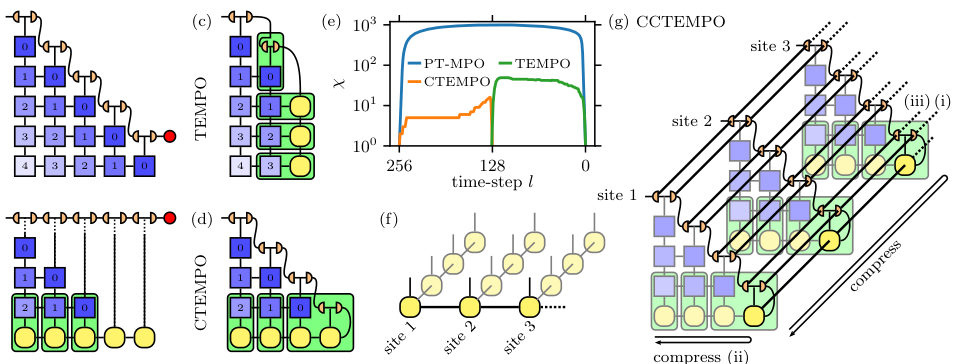
<figcaption class="paper-figure-caption"><b>Fig 1.</b> FIG. 1. (a) Tensor network representation of the path summation in Eq. (2). The initial state (red circle) is propagated by contracting with system propagators (orange semicircles) and influence tensors (blue boxes). Different methods (b-d) correspond to different contraction orders. The current MPO (yellow boxes) is updated by including, in the next step, the terms contained in the green boxes. In TEMPO (c) the tensor network is contracted column by column. PT-MPOs (b) are obtained by contracting only the influence tensors. This is done row by row to utilize the causal structure of the tensor network [9]. The system propagators are later contracted with the final PT-MPO. Our CTEMPO scheme...</figcaption>
</figure>
<figure class="paper-figure-card">
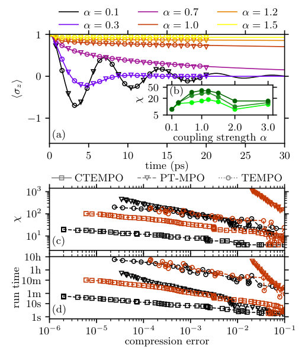
<figcaption class="paper-figure-caption"><b>Fig 2.</b> FIG. 2. (a) Dynamics of the spin-boson model solved using TEMPO, PT-MPO, and CTEMPO schemes. The inset shows the maximal inner bond dimension in CTEMPO simulation as a function of the coupling strength α for final propagation times Ωtf = 10.24, 20.48, 40.96 (from light to dark green). (c) Bond dimensions and (d) computation times on an Intel Xeon w3-2435 processor, respectively, as a function of the compression error for Ωtf = 20.48 and for two values of the coupling strength α = 0.1 (black) and α = 1 (brown).</figcaption>
</figure>
<figure class="paper-figure-card">
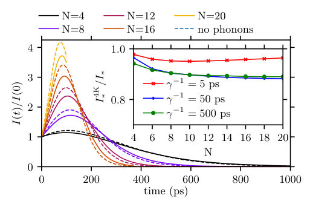
<figcaption class="paper-figure-caption"><b>Fig 3.</b> FIG. 4. Superradiant emission of up to N = 20 semiconduc- tor quantum dots coupled to individual super-Ohmic phonon baths. The radiative lifetime is γ−1 = 500 ps. The inset shows the ratio between the maximal peak intensities for simulations with and without accounting for phonons.</figcaption>
</figure>
<figure class="paper-figure-card">
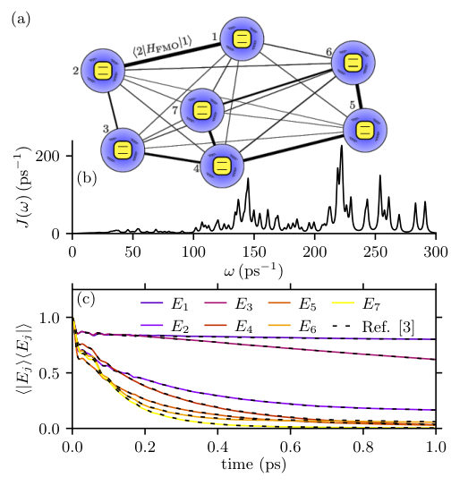
<figcaption class="paper-figure-caption"><b>Fig 4.</b> FIG. 3. (a) 7-site Fenna-Matthews-Olson complex as a non- Markovian quantum network, where each site is coupled to a strongly structured phonon bath at T = 77 K with spectral density in (b). (c) Dynamics of initially populated energy eigenstates for ∆t = 1 fs and ϵ = 10−6. Dashed lines show reference results obtained using DAMPF [3].</figcaption>
</figure>
</div>

<p><strong>Summary.</strong> This paper introduces CTEMPO, a novel tensor network path integral method designed for numerically exact simulation of open quantum systems with strong coupling. It overcomes the limitations of previous techniques by maintaining small bond dimensions, enabling the study of complex models like photosynthetic complexes and large quantum dot arrays. This provides a turnkey solution for non-Markovian quantum dynamics.</p>
<p><strong>Why it may be interesting.</strong> This work is highly relevant to AMO physics and quantum optics as it provides a powerful, scalable numerical tool to simulate open quantum dynamics in complex, strongly coupled environments where standard methods fail due to memory or computational cost.</p>
<details>
<summary>Detailed structure</summary>
<p><strong>Main problem.</strong> The paper addresses the challenge of numerically simulating non-Markovian open quantum networks, especially those involving strong system-bath couplings, which typically lead to exponentially scaling state spaces.</p>
<p><strong>Main result.</strong> The proposed CTEMPO scheme provides a significant computational speed-up (orders of magnitude) over established methods like TEMPO and PT-MPO, allowing for the simulation of complex systems like the 7-site FMO complex and large QD arrays.</p>
<p><strong>Method.</strong> The core method is CTEMPO, a novel tensor network path integral scheme that combines insights from TEMPO and causal contraction order to maintain small bond dimensions when simulating the time evolution of the system density matrix.</p>
<p><strong>Model / system.</strong> The work applies to general open quantum networks, including the spin-boson model, the 7-site Fenna-Matthews-Olson (FMO) photosynthetic complex, and arrays of quantum dots (QDs) coupled to structured phonon baths.</p>
<p><strong>Key observables.</strong> Time evolution of expectation values (e.g., $\langle \sigma_z 
angle$), superradiant emission intensity, and computational metrics like bond dimensions ($\chi$) and run time.</p>
<p><strong>Important parameters / regimes.</strong> Strong coupling regimes ($\alpha=1$), spectral density structure (super-Ohmic), and system size ($N$ up to 20 QDs).</p>
<p><strong>Assumptions / limitations.</strong> The method assumes the environment coupling can be effectively mapped onto a tensor network structure, and the simulation is limited by available computer memory for very large systems.</p>
<p><strong>Figures summary.</strong> Figures illustrate the tensor network structure comparison (CTEMPO vs. others), the time evolution of $\langle \sigma_z 
angle$ showing performance gains, and the superradiant emission intensity decay curves.</p>
<p><strong>Paper structure.</strong> The paper introduces the problem, details the CTEMPO algorithm and its multi-site extension (comb tensor network), validates it by benchmarking against existing methods on the spin-boson model, and then applies it to complex physical systems like FMO and QDs.</p>
</details>
<details>
<summary>Abstract</summary>
<p>Non-Markovian open quantum networks are among the most challenging problems in quantum theory, as they suffer from both, the exponentially scaling many-body state space as well as long memory times when the sites are strongly coupled to structured environments. Recent efforts to address them by combining tensor networks with real-time path integrals, such as TEMPO and process tensors, were however limited to systems with rather weak system-environment couplings because strong couplings lead to large bond dimensions. Here, we devise a tensor network scheme (CTEMPO) resulting in particularly small bond dimensions for single-site problems. We then extend this to a practical scheme to simulate non-Markovian quantum networks by time-evolving a corresponding comb tensor network. Benchmarking the single-site algorithm on the spin-boson model we find orders-of-magnitude improvement over established methods. The multi-site algorithm is shown to solve the notoriously difficult problem of the 7-site Fenna-Matthews-Olson photosynthetic complex, whose spectral density contains 62 peaks. We then apply our approach to explore the scaling behavior of the superradiance of up to $N=20$ quantum dots individually coupled to super-Ohmic phonon baths. Our approach provides a turnkey solution to non-Markovian quantum networks and is compatible with more general tensor network topologies.</p>
</details>
<p><sub><a href="#top">↑ back to top</a></sub></p>

<p><a id="paper-2610.09971"></a></p>
<h3 id="dissipation-selected-photon-phonon-pair-and-photon-bundle-emission-in-a-tripartite-mollow-system"><a href="http://arxiv.org/abs/2610.09971v1">Dissipation-selected photon-phonon pair and photon-bundle emission in a tripartite Mollow system</a></h3>
<p><strong>Authors:</strong> Jiayuan Zhang, Geng Zhao, Jing Tang, Yuangang Deng<br>
<strong>Type:</strong> theory · <strong>Category:</strong> other · <strong>PDF:</strong> <a href="https://arxiv.org/pdf/2610.09971v1">https://arxiv.org/pdf/2610.09971v1</a><br>
<strong>Analysis basis:</strong> full PDF text, analyzed in chunks
<strong>Topic relevance:</strong> 🔥 <code>correlated / nonlocal dissipation</code> <strong>4/5</strong> · <code>Tavis-Cummings &amp; cavity-many-emitter</code> <strong>3/5</strong> · <code>driven-dissipative phase transition</code> <strong>3/5</strong> · <code>methods for driven-dissipative</code> <strong>3/5</strong> · <code>non-equilibrium universality</code> <strong>2/5</strong> · <code>quantum measurements</code> <strong>2/5</strong> · <code>Dicke superradiance</code> <strong>1/5</strong> · <code>Full counting statistics</code> <strong>1/5</strong> · <code>Keldysh / 2PI / non-Gaussian methods</code> <strong>1/5</strong> · <code>analog quantum simulation</code> <strong>1/5</strong> · <code>superradiant laser</code> <strong>1/5</strong></p>
<div class="figure-strip-hint">↔ Scroll figures horizontally</div>
<div class="paper-figures-scroll">
<figure class="paper-figure-card">
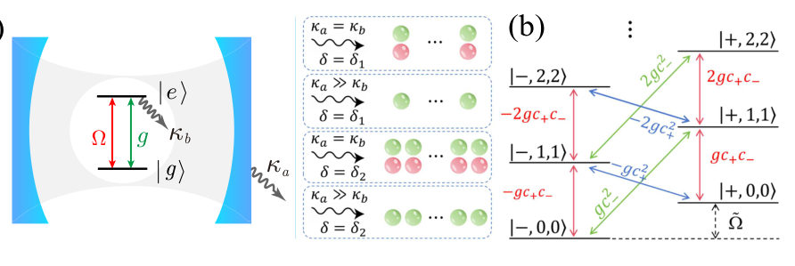
<figcaption class="paper-figure-caption"><b>Fig 1.</b> Figure 1. (a) Schematic of the dissipative tripartite Mollow system. A driven two-level emitter is coupled to a cavity-photon mode and a motional phonon mode through the tripartite interaction. By tuning the dissipation ratio κa/κb, the system can be switched between photon-phonon pair emission and photon-bundle emission at the single-pair (δ = δ1) and multipair (δ = δ2) resonances. (b) Dressed-state structure in the Mollow regime. Strong driving forms the manifolds |±, n, n⟩, and the tripartite interaction mediates higher-order resonant transitions between |+, 0, 0⟩and |−, N, N⟩, providing the coherent origin of dissipation-selected quantum emission.</figcaption>
</figure>
<figure class="paper-figure-card">
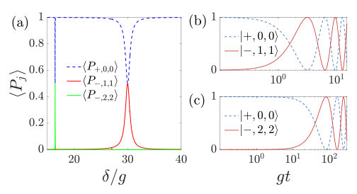
<figcaption class="paper-figure-caption"><b>Fig 2.</b> Figure 2. (a) Time-averaged population of states |+, 0, 0⟩, |−, 1, 1⟩, |−, 2, 2⟩ as functions of δ, showing the one- pair, two-pair, and three-pair resonances. (b)-(c) Photon- phonon super-Rabi oscillations between |+, 0, 0⟩and |−, 1, 1⟩, |−, 2, 2⟩, respectively, with δ/g = 26.25, 16.47, corresponding to the one-pair and two-pair resonances. The other parame- ters are Ω/g = 30 and ∆/g = 60.</figcaption>
</figure>
<figure class="paper-figure-card">
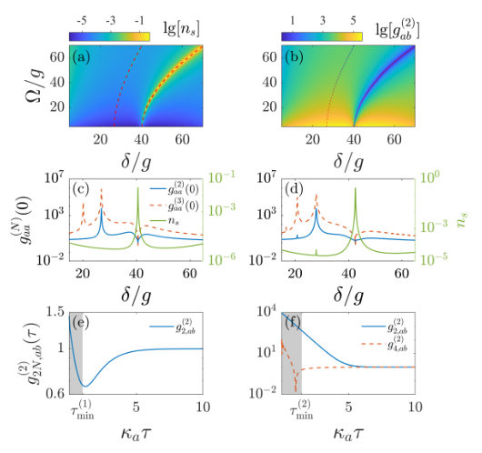
<figcaption class="paper-figure-caption"><b>Fig 3.</b> Figure 3. Photon-phonon pair emission under symmetric dissipation, κa = κb, with g/κa = 10 and ∆/g = 160. (a) Steady-state population ns = na = nb and (b) photon-phonon cross-correlation g(2) ab (0) as functions of Ω/g and δ/g. The dashed curves denote the analytically predicted one-pair and two-pair resonances. (c)-(d) Photon autocorrelations g(2) aa (0) and g(3) aa (0) together with the population ns versus δ/g for Ω/g = 10 and 20, respectively, revealing the one-pair and two- pair resonances. (e) Time-delayed correlation g(2) 2,ab(τ) at the one-pair resonance, showing antibunching between successive pairs. (f) Time-delayed correlations g(2) 2,ab(τ) and g(2) 4,ab(τ) at the two-pair...</figcaption>
</figure>
<figure class="paper-figure-card">
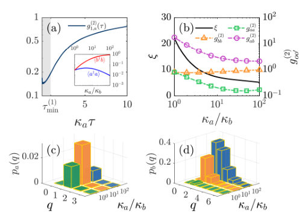
<figcaption class="paper-figure-caption"><b>Fig 4.</b> Figure 4. Dissipation-induced transition from photon-phonon pair emission to single-photon emission at the first-order res- onance for δ/g = 26, Ω/g = 10, and ∆/g = 160. (a) Time- delayed photon correlation function g(2) 1,a(τ) for κa/κb = 100, showing antibunched single-photon emission. Inset: steady- state photon and phonon populations as functions of the dis- sipation ratio κa/κb. (b) Cauchy-Schwarz parameter ξ, pho- ton autocorrelation g(2) aa (0), phonon autocorrelation g(2) bb (0), and photon-phonon cross-correlation g(2) ab (0) versus κa/κb. Increasing dissipation asymmetry suppresses the photon- phonon correlations and drives the system toward dynami- cal decoupling. (c) Steady-state...</figcaption>
</figure>
<figure class="paper-figure-card">
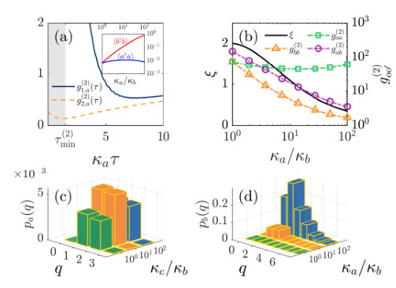
<figcaption class="paper-figure-caption"><b>Fig 5.</b> Figure 5. Dissipation-induced transition from photon- phonon pair emission to two-photon bundle emission at the two-pair resonance, with δ/g ≃19.64, Ω/g = 30, and ∆/g = 90. (a) Time-delayed photon correlations g(2) 1,a(τ) and g(2) 2,a(τ) for κa/κb = 100, showing bunching of individual pho- tons within a bundle and antibunching between successive two-photon bundles. Inset: steady-state photon and phonon populations as functions of the dissipation ratio κa/κb. (b) Cauchy-Schwarz parameter ξ, photon autocorrelation g(2) aa (0), phonon autocorrelation g(2) bb (0), and photon-phonon cross- correlation g(2) ab (0) versus κa/κb. Increasing dissipation asym- metry suppresses photon-phonon...</figcaption>
</figure>
</div>

<p><strong>Summary.</strong> This paper demonstrates that the symmetry of dissipation in a tripartite Mollow system can actively control the quantum emission pathway. By tuning the dissipation symmetry, the system can be forced to emit either highly correlated photon-phonon pairs or distinct photon bundles. This establishes dissipation symmetry as a powerful resource for programmable hybrid quantum emitters.</p>
<p><strong>Why it may be interesting.</strong> This work directly addresses the frontier of open quantum systems, demonstrating that engineered dissipation can be a constructive tool for quantum state engineering, moving beyond its traditional role as a source of loss.</p>
<details>
<summary>Detailed structure</summary>
<p><strong>Main problem.</strong> The study investigates whether dissipation can actively determine or select the type of quantum resource (e.g., correlated pairs vs. photon bundles) emitted from an open hybrid quantum system, rather than simply causing decoherence.</p>
<p><strong>Main result.</strong> Dissipation symmetry acts as a controllable resource, allowing the system to steer quantum emission between correlated photon-phonon pairs (under symmetric dissipation) and purely photonic nonclassical states (under asymmetric dissipation).</p>
<p><strong>Method.</strong> The analysis uses the Lindblad master equation to model the open system dynamics and characterizes emission using time-resolved correlation functions, Fock-state distributions, and Wigner quasiprobability distributions.</p>
<p><strong>Model / system.</strong> The system is a tripartite Mollow setup involving a strongly driven two-level emitter coupled simultaneously to cavity photons and motional phonons. The dynamics are governed by an effective Hamiltonian derived in the Mollow regime.</p>
<p><strong>Key observables.</strong> Time-delayed second-order correlation functions ($g^{(2)}$), Fock-state distributions, and Wigner quasiprobability distributions.</p>
<p><strong>Important parameters / regimes.</strong> The dissipation ratio ($\kappa_a/\kappa_b$) is the key control parameter, determining the emission regime (symmetric vs. asymmetric dissipation).</p>
<p><strong>Assumptions / limitations.</strong> The system dynamics are modeled using effective Hamiltonians derived under the rotating-wave approximation, and the selection mechanism is attributed to the symmetry of the bosonic dissipation channels.</p>
<p><strong>Figures summary.</strong> Figure 1 schematically illustrates the switching between pair and bundle emission by tuning the dissipation ratio ($\kappa_a/\kappa_b$), and another figure shows the dressed-state structure in the Mollow regime.</p>
<p><strong>Paper structure.</strong> The paper progresses by first establishing the tripartite Mollow model, deriving effective Hamiltonians for $N$-pair processes, and then analyzing the resulting emission regimes—symmetric (pair emission) versus asymmetric (bundle emission)—by controlling the dissipation symmetry.</p>
</details>
<details>
<summary>Abstract</summary>
<p>Dissipation is generally regarded as detrimental to nonclassical-state generation, yet whether it can determine which quantum resource is emitted from an open hybrid quantum system remains largely unexplored. Here, we show that the symmetry of bosonic dissipation channels can select and switch quantum-emission pathways in a tripartite Mollow system, where a strongly driven two-level emitter simultaneously couples to cavity photons and motional phonons. In the Mollow regime, higher-order tripartite interactions generate resonant photon-phonon pair excitations, whose emitted quantum states are subsequently selected by dissipation. Under symmetric dissipation, the system produces strongly correlated photon-phonon pairs, enabling both single-pair emission and correlated multipair bundles with pronounced nonclassical correlations. Breaking the dissipation symmetry progressively suppresses the hybrid correlations and dynamically decouples the photonic and phononic degrees of freedom. In the strongly asymmetric regime, long-lived phonons accumulate in highly excited Fock states, while rapidly leaking cavity photons are converted into high-purity single-photon and two-photon bundles. The crossover between these distinct emission regimes is characterized through time-resolved correlation functions, Fock-state distributions, and Wigner quasiprobability distributions. Our results establish dissipation symmetry as a resource for steering quantum emission between hybrid and purely photonic nonclassical states, providing a route toward programmable hybrid quantum emitters and dissipative quantum-state engineering.</p>
</details>
<p><sub><a href="#top">↑ back to top</a></sub></p>

<p><a id="paper-2610.09893"></a></p>
<h3 id="path-complementarity-enables-directional-quantum-light-in-hybridized-cavity-polaritons"><a href="http://arxiv.org/abs/2610.09893v1">Path Complementarity Enables Directional Quantum Light in Hybridized Cavity Polaritons</a></h3>
<p><strong>Authors:</strong> Jing Tang, Yuangang Deng<br>
<strong>Type:</strong> theory · <strong>Category:</strong> other · <strong>PDF:</strong> <a href="https://arxiv.org/pdf/2610.09893v1">https://arxiv.org/pdf/2610.09893v1</a><br>
<strong>Analysis basis:</strong> full PDF text, analyzed in chunks
<strong>Topic relevance:</strong> 🔥 <code>interference shaping light</code> <strong>4/5</strong> · <code>driven-dissipative phase transition</code> <strong>3/5</strong> · <code>methods for driven-dissipative</code> <strong>3/5</strong> · <code>Tavis-Cummings &amp; cavity-many-emitter</code> <strong>2/5</strong> · <code>analog quantum simulation</code> <strong>2/5</strong> · <code>correlated / nonlocal dissipation</code> <strong>2/5</strong> · <code>non-equilibrium universality</code> <strong>2/5</strong> · <code>Full counting statistics</code> <strong>1/5</strong> · <code>Keldysh / 2PI / non-Gaussian methods</code> <strong>1/5</strong> · <code>quantum measurements</code> <strong>1/5</strong></p>
<div class="figure-strip-hint">↔ Scroll figures horizontally</div>
<div class="paper-figures-scroll">
<figure class="paper-figure-card">
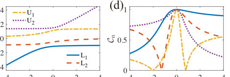
<figcaption class="paper-figure-caption"><b>Fig 1.</b> Figure 1. (a) Ring-cavity QED system supporting CW and CCW modes ˆa+ and ˆa−, hybridized by backscattering with strength J. (b) V-type emitter selectively coupled to the CW and CCW modes through the σ+ and σ−transitions, respec- tively; the excited states are split by δf. (c) Single-excitation dressed spectrum versus δf/g for ∆c/g = 0, δp/g = 0.5, and J/g = 0.5. (d) Intrinsic photonic path concurrence Cn of the four polariton branches. Exchange symmetry gives Cn = 1 at δf = 0, while finite δf redistributes the CW and CCW weights in a branch-dependent manner.</figcaption>
</figure>
<figure class="paper-figure-card">
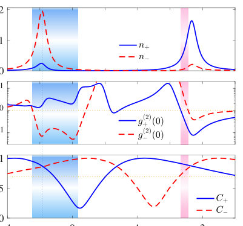
<figcaption class="paper-figure-caption"><b>Fig 2.</b> Figure 2. Directional photon statistics and single-photon path entanglement. (a) Steady-state photon populations n+ and n−, (b) equal-time second-order correlations g(2) + (0) and g(2) −(0), and (c) conditional single-photon path concurrences C+ and C−as functions of the cavity detuning ∆c. The horizontal dotted lines in (b) and (c) indicate g(2)(0) = 1 and C± = 0.7, respectively. The vertical dotted line marks a representative operating point exhibiting directional anti- bunching together with strong path entanglement. The other parameters are g/κ = 6, J/g = 1, δf/g = 8, δp/g = 0.8, γ/κ = 0.1, and η/κ = 0.1.</figcaption>
</figure>
<figure class="paper-figure-card">
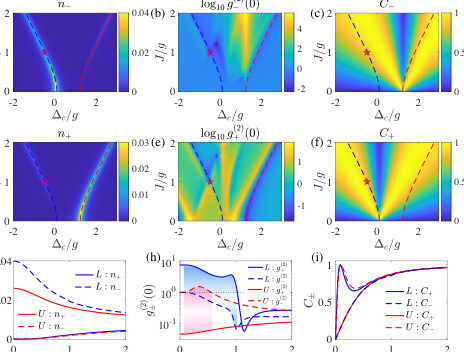
<figcaption class="paper-figure-caption"><b>Fig 3.</b> Figure 3. Branch-resolved directional photon statistics and path entanglement. (a)-(c) Photon population n−, equal-time correlation log10 g(2) −(0), and conditional single-photon path concurrence C−for the −input in (∆c, J) plane. (d)-(f) Cor- responding quantities for the + input. Blue and red dashed curves denote the lower and upper one-photon resonances, re- spectively. The stars mark the lower-branch operating point at J/g = 1 and ∆c/g ≃−0.48, corresponding to the vertical dotted line in Fig. 2. (g)-(i) n±, g(2) ± (0), and C±, evaluated along the lower (blue) and upper (red) resonance branches. Solid and dashed curves denote the + and −inputs, respec- tively. The horizontal dotted line...</figcaption>
</figure>
<figure class="paper-figure-card">
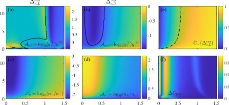
<figcaption class="paper-figure-caption"><b>Fig 4.</b> Figure 4. Branch-resolved directional quantum response in the (J, δf) parameter plane. The first and second columns correspond to the lower (L) and upper (U) one-photon res- onance branches ∆res c,L and ∆res c,U, respectively. (a),(b) Signed photon-statistical asymmetry Astat = log10[g(2) + (0)/g(2) −(0)]. Black solid contours delimit the regions of opposite photon statistics, [g(2) + (0) −1][g(2) −(0) −1] &lt; 0. (c),(d) Signed in- tensity asymmetry An = log10(n+/n−). (e) Conditional single-photon path concurrence C−(∆res c,L); the black dashed contour marks C−= 0.7. (f) Worst-case branch-direction concurrence mismatch ∆CBD. Branch switching reverses both photon-statistical and intensity...</figcaption>
</figure>
</div>

<p><strong>Summary.</strong> This paper proposes that path complementarity, arising from the interplay between cavity backscattering and Zeeman splitting in a ring-cavity QED system, is the key mechanism for generating directional quantum light. The authors demonstrate that this mechanism allows for the simultaneous observation of directional photon blockade and strong single-photon path entanglement. This establishes a general design rule for controlling quantum light sources for applications in quantum communication.</p>
<p><strong>Why it may be interesting.</strong> This work provides a concrete, general design principle—path complementarity—for engineering nonclassical light sources, linking fundamental concepts of coherence preservation with directional quantum control, which is highly relevant to quantum optics.</p>
<details>
<summary>Detailed structure</summary>
<p><strong>Main problem.</strong> The challenge is achieving directional quantum light that exhibits asymmetric photon statistics while maintaining high coherence between counterpropagating paths.</p>
<p><strong>Main result.</strong> The interplay between cavity backscattering and Zeeman splitting establishes 'path complementarity' as a general design principle, allowing directional photon blockade and strong path entanglement to coexist.</p>
<p><strong>Method.</strong> Theoretical analysis using the Hamiltonian and master equation in the driven-dissipative regime to derive intrinsic polariton properties and steady-state quantum correlations.</p>
<p><strong>Model / system.</strong> The system is a ring-cavity Quantum Electrodynamics (QED) setup hybridized with a three-level emitter, modeled by a Hamiltonian incorporating cavity detuning, coupling, backscattering, and Zeeman splitting.</p>
<p><strong>Key observables.</strong> Directional photon blockade (antibunching in one direction, bunching in the other), single-photon path entanglement, and path concurrence ($C_n$).</p>
<p><strong>Important parameters / regimes.</strong> Weak driving regime, Zeeman splitting ($\delta_f$), cavity backscattering ($J$), and the resonance branch selection.</p>
<p><strong>Assumptions / limitations.</strong> The analysis focuses on the weak-drive regime, allowing the intrinsic polariton structure to dictate the directional response.</p>
<p><strong>Figures summary.</strong> Figure 1 illustrates the physical setup, the dressed spectrum, and the intrinsic photonic path concurrence; later figures establish the coexistence of directional blockade and path entanglement across parameter regimes.</p>
<p><strong>Paper structure.</strong> The paper first identifies the physical ingredients (backscattering and Zeeman splitting) leading to the problem. It then analyzes the intrinsic polariton structure to derive path predictability and concurrence. Finally, it extends this analysis to the driven-dissipative steady state to demonstrate the coexistence of directional photon statistics and path entanglement.</p>
</details>
<details>
<summary>Abstract</summary>
<p>Directional quantum light requires asymmetric photon statistics without sacrificing coherence between propagation paths, a combination that remains difficult to achieve within a single quantum-optical platform. Here we identify a microscopic path-complementarity mechanism in hybridized cavity polaritons that reconciles these two requirements. In a Zeeman-split ring-cavity QED system, cavity backscattering hybridizes the counterpropagating modes, whereas the Zeeman splitting creates spectrally asymmetric excitation channels. Their interplay gives rise, under weak driving, to directional photon blockade coexisting with strong single-photon path entanglement: one input direction exhibits antibunching while the opposite direction is bunched. Remarkably, switching between the two one-photon polariton resonances reverses both the photon-statistical and intensity asymmetries while nearly preserving the path concurrence over a broad parameter regime. Our results establish path complementarity as a general design principle for directional nonclassical light with retained quantum coherence.</p>
</details>
<p><sub><a href="#top">↑ back to top</a></sub></p>

<p><a id="paper-2610.09062"></a></p>
<h3 id="geometric-heat-pumping-on-a-quantum-processor"><a href="http://arxiv.org/abs/2610.09062v1">Geometric heat pumping on a quantum processor</a></h3>
<p><strong>Authors:</strong> Gerónimo J. Caselli, Luis O. Manuel, Liliana Arrachea, Pablo S. Cornaglia<br>
<strong>Type:</strong> both · <strong>Category:</strong> statistical mechanics · <strong>PDF:</strong> <a href="https://arxiv.org/pdf/2610.09062v1">https://arxiv.org/pdf/2610.09062v1</a><br>
<strong>Analysis basis:</strong> full PDF text, analyzed in chunks
<strong>Topic relevance:</strong> 🔥 <code>QC/QI experiment</code> <strong>4/5</strong> · <code>driven-dissipative phase transition</code> <strong>3/5</strong> · <code>methods for driven-dissipative</code> <strong>3/5</strong> · <code>non-equilibrium universality</code> <strong>3/5</strong> · <code>analog quantum simulation</code> <strong>2/5</strong> · <code>quantum measurements</code> <strong>2/5</strong> · <code>Full counting statistics</code> <strong>1/5</strong> · <code>Keldysh / 2PI / non-Gaussian methods</code> <strong>1/5</strong> · <code>correlated / nonlocal dissipation</code> <strong>1/5</strong></p>
<div class="figure-strip-hint">↔ Scroll figures horizontally</div>
<div class="paper-figures-scroll">
<figure class="paper-figure-card">
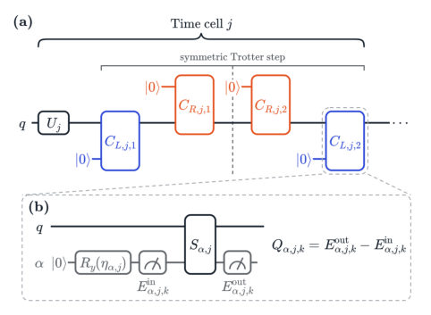
<figcaption class="paper-figure-caption"><b>Fig 1.</b> FIG. 1. Quantum circuit for one time cell 𝑗of the heat pump. (a) The working qubit 𝑞evolves under 𝑈𝑗and then undergoes the symmetric collision sequence 𝐶𝐿,𝑗,1, 𝐶𝑅,𝑗,1, 𝐶𝑅,𝑗,2, 𝐶𝐿,𝑗,2 with its left (𝐿) and right (𝑅) bath ancillas; each ancilla is reset to |0⟩before every collision. (b) Structure of a single collision 𝐶𝛼,𝑗,𝑘: the ancilla is rotated by 𝑅𝑦(𝜂𝛼,𝑗), and a projective energy measurement yields 𝐸in 𝛼,𝑗,𝑘while preparing the thermal state. After the partial-swap gate 𝑆𝛼,𝑗, a second measure- ment yields 𝐸out 𝛼,𝑗,𝑘, giving the stochastic heat 𝑄𝛼,𝑗,𝑘= 𝐸out 𝛼,𝑗,𝑘−𝐸in 𝛼,𝑗,𝑘 delivered to bath 𝛼.</figcaption>
</figure>
<figure class="paper-figure-card">
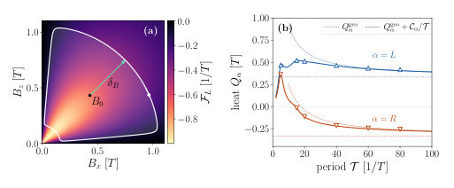
<figcaption class="paper-figure-caption"><b>Fig 2.</b> FIG. 2. (a) Curvature 𝐿of the adiabatic pump in the (𝐵𝑥, 𝐵𝑧) plane and a driving loop of amplitude 𝛿𝐵= 0.45 around 𝐵0 (𝐵0 = 0.61, 𝜗0 = 45◦, 𝛿𝜗= 40◦; 𝑘𝐵𝑇= 𝑔𝐿= 𝑔𝑅= 1, 𝜔𝑐= 120, 𝜅= 2.5). (b) Heat exchanged with the two reservoirs per driving cycle, for a clockwise sense of traversal, as a function of the period ; blue and orange denote the left (𝐿) and right (𝑅) reservoirs; positive 𝑄is heat delivered to the reservoir. Solid lines are the full Lindblad evolution, and open triangles are the results of the collision model with 𝑁= 48 cells per cycle. Dotted lines are the adiabatic limits 𝑄geo 𝐿 = −𝑄geo 𝑅 ≃ 0.334, and dashed lines are the expansion 𝑄geo 𝛼 + 𝛼∕with 𝐿= 𝑅≃5.887.</figcaption>
</figure>
<figure class="paper-figure-card">
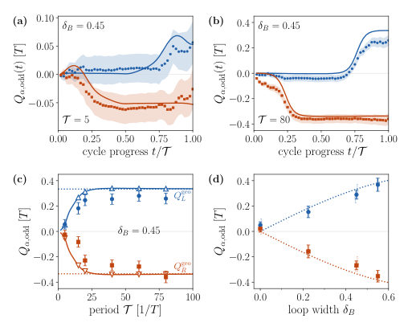
<figcaption class="paper-figure-caption"><b>Fig 3.</b> FIG. 3. Orientation-odd (pumped) heat on ibm_kingston compared with the exact discrete collision model. (a)–(b) Cumulative odd heat 𝑄𝛼,odd(𝑡) [see Eq. 16] exchanged with the left (𝐿, blue disks) and right (𝑅, orange squares) reservoirs along one cycle, for periods = 5, and 80 at 𝛿𝐵= 0.45. Lines: ideal collision model with 𝑁= 48 and the same initial state as the measurements; symbols: measurements; shaded bands: 1𝜎shot-noise uncertainty. (c) Pumped heat 𝑄𝛼,odd (see Eq. 16). Filled symbols with error bars are the quantum processor measurements (±1𝜎). The odd heat components have opposite signs 𝑄𝐿,odd ≃−𝑄𝑅,odd, which is consistent with the predicted pumping response. (d) Pumped heat per cycle...</figcaption>
</figure>
<figure class="paper-figure-card">
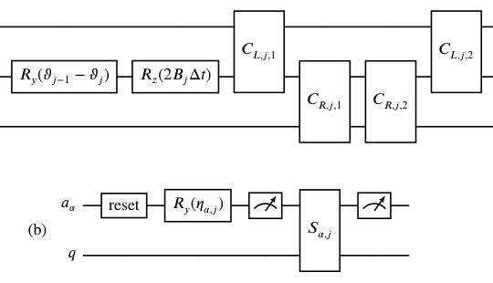
<figcaption class="paper-figure-caption"><b>Fig 4.</b> FIG. 1. (a) Gates of cell 𝑗. The first two gates form the coherent step 𝑈𝑗; the frame update is omitted for 𝑗= 0. (b) One collision 𝐶𝛼,𝑗,𝑘. The first measurement records 𝑏in and completes the thermal preparation; the second records 𝑏out. 𝑆𝛼,𝑗is the partial swap of Eq. (11), compiled into two CZ gates and single-qubit rotations.</figcaption>
</figure>
</div>

<p><strong>Summary.</strong> This paper demonstrates geometric heat pumping on a superconducting quantum processor by cyclically driving a qubit coupled to two thermal reservoirs. The authors show that the measurable, non-zero heat pumped is a geometric quantity determined by the path taken in parameter space. This bridges fundamental concepts from quantum thermodynamics and geometric phases to near-term quantum hardware implementations.</p>
<p><strong>Why it may be interesting.</strong> This work provides a concrete, experimentally relevant platform (superconducting qubits) to test fundamental non-equilibrium thermodynamic principles, specifically linking quantum work extraction to geometric phases.</p>
<details>
<summary>Detailed structure</summary>
<p><strong>Main problem.</strong> The paper investigates geometric heat pumping—the transfer of energy between reservoirs at equal temperature—by cyclically driving a quantum system.</p>
<p><strong>Main result.</strong> The pumped heat is shown to be a purely geometric quantity, depending only on the area enclosed by the driving contour in parameter space, and this is confirmed by comparing collision models to the adiabatic limit.</p>
<p><strong>Method.</strong> The authors employ a collision model implemented on a quantum processor, analyzing the system dynamics using both discrete time-stepping (collision model) and continuous-time adiabatic expansions.</p>
<p><strong>Model / system.</strong> The system is a working qubit coupled to two thermal reservoirs (L and R), modeled via a collision process involving ancilla qubits. The dynamics are described by a time-dependent Lindblad master equation.</p>
<p><strong>Key observables.</strong> Stochastic heat exchanged per collision ($Q_{\alpha,j,k}$), ensemble average heat ($Q_c^\alpha$), and the geometric heat contribution ($Q_{geo}^\alpha$).</p>
<p><strong>Important parameters / regimes.</strong> The slow-driving regime, the area enclosed by the driving contour, and the ratio of pumped heat to noise-induced heating.</p>
<p><strong>Assumptions / limitations.</strong> The analysis relies on the adiabatic approximation in the slow-driving limit to extract the geometric contribution, and the collision model assumes ancillas are reset after each interaction.</p>
<p><strong>Figures summary.</strong> Figures illustrate the quantum circuit for a single time cell, detailing the sequence of collisions and the structure of energy measurements ($E_{in}$ and $E_{out}$) used to calculate heat.</p>
<p><strong>Paper structure.</strong> The paper moves from defining the physical setup and the collision model to deriving the continuous-time Lindblad dynamics. It then analyzes the slow-driving limit using adiabatic expansions to isolate the geometric heat term, benchmarking these results against direct simulations of the collision model.</p>
</details>
<details>
<summary>Abstract</summary>
<p>Geometric heat pumping is the transfer of energy between reservoirs at equal temperature where the heat exchanged in an adiabatic cycle depends only on the driving contour in parameter space. We implement this mechanism on a superconducting quantum processor using a collision model, where a driven qubit interacts repeatedly with two ancilla qubits that are prepared in thermal states and emulate the reservoirs. Energy measurements before and after each interaction provide a calorimetric record of the heat exchanged with each reservoir. By reversing the driving contour, we extract a heat contribution associated with pumping. Its dependence on the period and on the contour follows exact simulations of the collision model, without adjustable parameters, and approaches in the slow-driving regime the geometric limit of the corresponding Lindblad dynamics.</p>
</details>
<p><sub><a href="#top">↑ back to top</a></sub></p>

<p><a id="paper-2610.09662"></a></p>
<h3 id="correspondence-between-asymptotic-quantum-many-body-scars-in-closed-systems-and-diffusive-nambu-goldstone-modes-in-open-systems"><a href="http://arxiv.org/abs/2610.09662v1">Correspondence between Asymptotic Quantum Many-Body Scars in Closed Systems and Diffusive Nambu-Goldstone Modes in Open Systems</a></h3>
<p><strong>Authors:</strong> Masaya Kunimi, Taiki Haga, Masaya Nakagawa<br>
<strong>Type:</strong> theory · <strong>Category:</strong> statistical mechanics · <strong>PDF:</strong> <a href="https://arxiv.org/pdf/2610.09662v1">https://arxiv.org/pdf/2610.09662v1</a><br>
<strong>Analysis basis:</strong> full PDF text, analyzed in chunks
<strong>Topic relevance:</strong> 🔥 <code>scars &amp; prethermalization</code> <strong>4/5</strong> · <code>driven-dissipative phase transition</code> <strong>3/5</strong> · <code>non-equilibrium universality</code> <strong>3/5</strong> · <code>Keldysh / 2PI / non-Gaussian methods</code> <strong>2/5</strong> · <code>methods for driven-dissipative</code> <strong>2/5</strong> · <code>analog quantum simulation</code> <strong>1/5</strong> · <code>correlated / nonlocal dissipation</code> <strong>1/5</strong> · <code>quantum measurements</code> <strong>1/5</strong></p>
<div class="figure-strip-hint">↔ Scroll figures horizontally</div>
<div class="paper-figures-scroll">
<figure class="paper-figure-card">
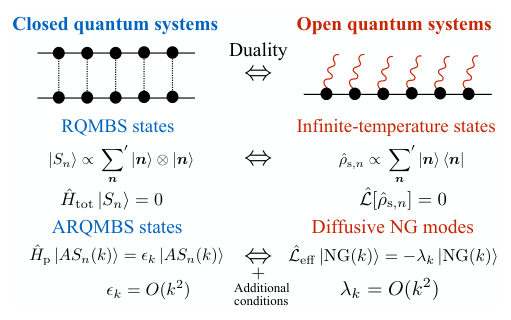
<figcaption class="paper-figure-caption"><b>Fig 1.</b> FIG. 1. Schematic of the correspondence between closed quantum systems and open quantum systems for the spin- 1/2 example.</figcaption>
</figure>
<figure class="paper-figure-card">
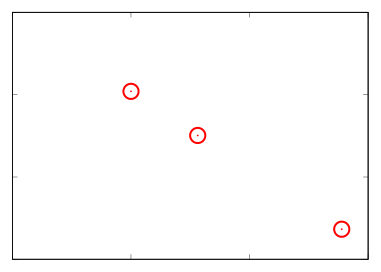
<figcaption class="paper-figure-caption"><b>Fig 2.</b> FIG. 4. Overlap between the ARQMBS state |ASM/2(1)⟩and the slowest-decaying mode.</figcaption>
</figure>
<figure class="paper-figure-card">
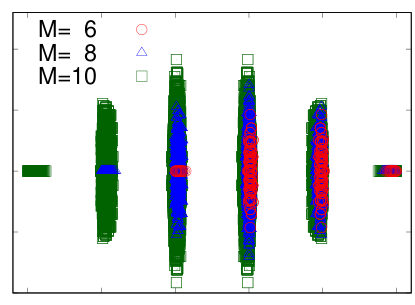
<figcaption class="paper-figure-caption"><b>Fig 3.</b> FIG. 2. Full Lindbladian spectrum η for ∆= 2 and γ = 5J/ℏ in the sector ˆSz tot ⊗ˆ1 = ˆ1 ⊗ˆSz tot = 0, where ˆSz tot ≡PM j=1 ˆSz j . The system sizes are M = 6, 8, and 10.</figcaption>
</figure>
<figure class="paper-figure-card">
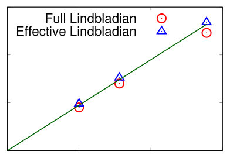
<figcaption class="paper-figure-caption"><b>Fig 4.</b> FIG. 3. Comparison of the slowest decay rates obtained from the full and effective Lindbladians. The parameters are the same as those in Fig. 2. The green solid line represents 1/M 2</figcaption>
</figure>
<figure class="paper-figure-card">
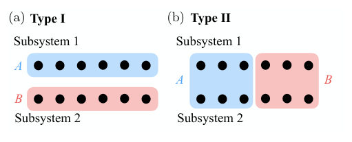
<figcaption class="paper-figure-caption"><b>Fig 5.</b> FIG. 5. Schematic of the two bipartitions of the system. The upper and lower black circles represent the lattice sites of the subsystems 1 and 2, respectively. (a) Type-I bipartition. The blue and red regions represent subsystems A and B, respec- tively, which coincide with subsystems 1 and 2. (b) Type-II bipartition. Subsystem A contains half of the sites in each of subsystems 1 and 2, and subsystem B contains the remaining half. See also Fig. 1 of Ref. [102].</figcaption>
</figure>
</div>

<p><strong>Summary.</strong> This paper reveals a fundamental duality connecting slow, non-thermalizing states (Quantum Many-Body Scars) in closed quantum systems to diffusive Nambu-Goldstone modes in open systems. By establishing a spectral correspondence between the parent Hamiltonian and the effective Lindbladian, the authors unify the understanding of slow relaxation across different physical regimes. This has broad implications for understanding quantum dynamics in both isolated and dissipative environments.</p>
<p><strong>Why it may be interesting.</strong> This work provides a powerful, unifying mathematical framework connecting two distinct physical phenomena—non-thermal scars in isolated systems and diffusive relaxation in open ones—using spectral theory.</p>
<details>
<summary>Detailed structure</summary>
<p><strong>Main problem.</strong> The paper establishes a deep theoretical correspondence between slow relaxation mechanisms in closed quantum systems (Quantum Many-Body Scars) and diffusive dynamics in open quantum systems (Nambu-Goldstone modes).</p>
<p><strong>Main result.</strong> It shows that a common underlying structure links weak ergodicity breaking in closed systems to diffusive hydrodynamics in open systems, specifically mapping an exact quadratic parent-Hamiltonian branch to a diffusive NG mode.</p>
<p><strong>Method.</strong> The authors use spectral analysis, variational constructions, and the comparison between the parent Hamiltonian of the scar states and the effective Lindbladian of the open system.</p>
<p><strong>Model / system.</strong> The study considers general spin, fermionic, and bosonic systems, exemplified by models like the XXZ Hamiltonian on a two-leg ladder. The dynamics are governed by a closed system Hamiltonian and an open system Lindblad master equation.</p>
<p><strong>Key observables.</strong> The key observables are the spectral properties: the gap scaling ($O(k^2)$) in the parent Hamiltonian for scars, and the decay rate $\lambda(k) \simeq Dk^2$ for the diffusive NG modes.</p>
<p><strong>Important parameters / regimes.</strong> The correspondence holds under the assumption of strong U(1) symmetry and local charge-dephasing Lindblad operators, and for uniformly bounded positive transition rates.</p>
<p><strong>Assumptions / limitations.</strong> The correspondence is derived assuming the existence of asymptotic scar states and the applicability of the Lindblad formalism for the open system dynamics.</p>
<p><strong>Paper structure.</strong> The paper proceeds by first defining the scar states in closed systems, then analyzing the dynamics in open systems via the Lindbladian, and finally establishing the spectral correspondence between the two frameworks.</p>
</details>
<details>
<summary>Abstract</summary>
<p>Hydrodynamic relaxation in open quantum many-body systems can be understood in terms of diffusive Nambu--Goldstone (NG) modes associated with strong-to-weak spontaneous symmetry breaking (SWSSB). Here, we find a common structure underlying weak ergodicity breaking in closed quantum systems and diffusive hydrodynamics in open quantum systems. We establish a spectral correspondence between the parent Hamiltonian of rainbow quantum many-body scar (RQMBS) states in closed systems and the effective Lindbladian of strongly dissipative open systems with strong $U(1)$ symmetry and local charge-dephasing Lindblad operators. For broad classes of spin, fermionic, and bosonic systems, we construct asymptotic RQMBS (ARQMBS) states. Within the enlarged scar subspace, the parent Hamiltonian admits a local Rokhsar--Kivelson-type frustration-free decomposition. A single-mode variational construction gives an $O(k^2)$ upper bound on its lowest excitation energy and yields states satisfying the defining ARQMBS criteria: orthogonality, vanishing energy variance, and characteristic entanglement scaling. Under vectorization, RQMBS states are mapped to maximally mixed infinite-temperature states in fixed-charge sectors, which exhibit long-range SWSSB order under finite-density conditions. Assuming uniformly bounded positive transition rates, the effective Lindbladian has the same local projectors as the parent Hamiltonian but with positive transition-dependent weights, yielding two-sided spectral bounds and the same system-size scaling of their gaps. For uniform rates, the two operators are proportional to each other and their eigenmodes coincide. Therefore, an exact quadratic parent-Hamiltonian branch maps directly to a diffusive NG mode. Our results connect different mechanisms of slow relaxation in closed and open quantum many-body systems.</p>
</details>
<p><sub><a href="#top">↑ back to top</a></sub></p>

<p><a id="paper-2610.09880"></a></p>
<h3 id="extensively-degenerate-superradiant-phase-in-a-giant-atom-quantum-rabi-ring"><a href="http://arxiv.org/abs/2610.09880v1">Extensively degenerate superradiant phase in a giant-atom quantum Rabi ring</a></h3>
<p><strong>Authors:</strong> Shu He, Li-Wei Duan<br>
<strong>Type:</strong> theory · <strong>Category:</strong> other · <strong>PDF:</strong> <a href="https://arxiv.org/pdf/2610.09880v1">https://arxiv.org/pdf/2610.09880v1</a><br>
<strong>Analysis basis:</strong> full PDF text, analyzed in chunks
<strong>Topic relevance:</strong> 🔥 <code>Dicke superradiance</code> <strong>4/5</strong> · <code>Tavis-Cummings &amp; cavity-many-emitter</code> <strong>3/5</strong> · <code>analog quantum simulation</code> <strong>3/5</strong> · <code>superradiant laser</code> <strong>3/5</strong> · <code>Keldysh / 2PI / non-Gaussian methods</code> <strong>1/5</strong> · <code>correlated / nonlocal dissipation</code> <strong>1/5</strong> · <code>driven-dissipative phase transition</code> <strong>1/5</strong> · <code>methods for driven-dissipative</code> <strong>1/5</strong></p>
<div class="figure-strip-hint">↔ Scroll figures horizontally</div>
<div class="paper-figures-scroll">
<figure class="paper-figure-card">
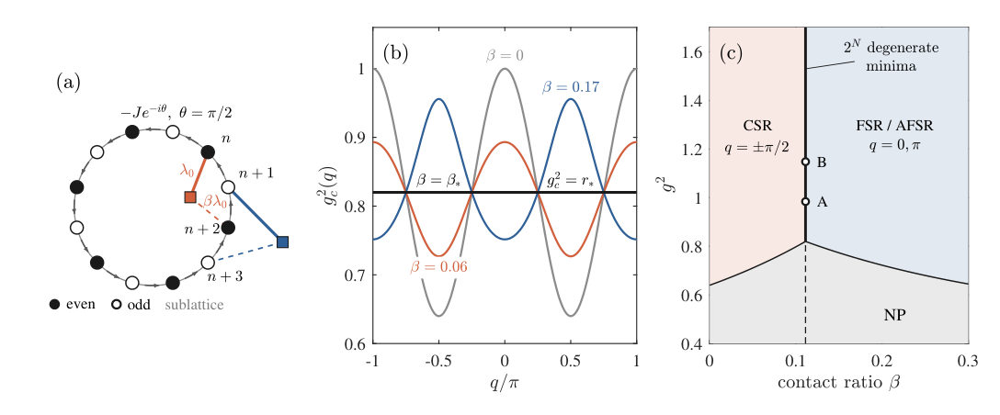
<figcaption class="paper-figure-caption"><b>Fig 1.</b> FIG. 1. Model and mean-field phase diagram (η →∞) at θ = π/2. (a) Each atom (square) couples to cavities n and n + 2 with strengths λ0 = λ/ p</figcaption>
</figure>
<figure class="paper-figure-card">
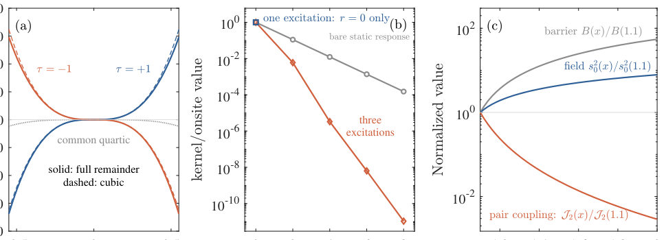
<figcaption class="paper-figure-caption"><b>Fig 2.</b> FIG. 2. Leading finite-frequency correction at j = 0.6 and θ = π/2, using point A (β∗= 1/9, x = 1.2) unless noted. (a) Anharmonic part of the local potential, δwτ(δs) = w(τs0 + δs) −w(s0) −w′′(s0) δs2/2, for the two wells τ = ±1. Solid curves show the full remainder. The cubic parts (dashed) have opposite signs in the two wells, whereas the quartic term w(4)(s0)δs4/24 (dotted) is common. (b) Magnitudes of the infinite-chain real-space kernels normalized to their onsite values: the one-excitation integral of Eq. (21) at β∗(square), which vanishes identically for r ̸= 0; the three-excitation integral ReR ∞</figcaption>
</figure>
<figure class="paper-figure-card">
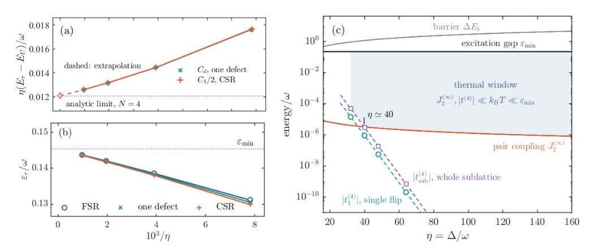
<figcaption class="paper-figure-caption"><b>Fig 3.</b> FIG. 3. Numerical checks and energy scales at j = 0.6, θ = π/2, and β∗= 1/9. Panels (a) and (b) use point A (x = 1.2); panel (c) uses B (x = 1.4). (a) Four-site energy differences relative to FSR, with the CSR difference divided by two: Cd = η(Ed −EU)/ω and C4/2 = η(E4 −EU)/(2ω). Symbols are cutoff-extrapolated full-spin results; solid lines are adiabatic results. Dashed segments extend quadratic full-spin fits to η−1 = 0. The two intercepts (open diamonds) are indistinguishable on this scale and differ from the analytic limit (dotted line) by 0.24% for this fit (Appendix D). (b) Excitation gaps within the minima at nc = 18 for FSR, one-defect, and CSR configurations: full-spin symbols and...</figcaption>
</figure>
<figure class="paper-figure-card">
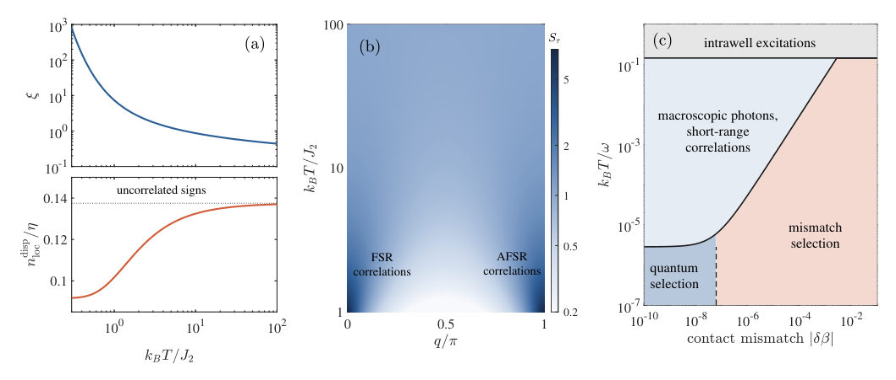
<figcaption class="paper-figure-caption"><b>Fig 4.</b> FIG. 4. Macroscopic photon occupation and thermal sign correlations at A (j = 0.6, x = 1.2, θ = π/2). Panels (a) and (b) use matched contacts β∗= 1/9 and the thermodynamic limit. (a) Correlation length ξ in physical lattice spacings (top) and the leading local displacement contribution to the photon number, ndisp loc /η (bottom), for the two sublattice Ising chains with couplings J2–J8. The dotted line is the uncorrelated-sign limit, 0.1375. (b) Sign structure factor Sτ(q) on a logarithmic color scale; values below 0.2 share the lightest color. Its peaks at q = 0 and π show FSR and AFSR correlations. The photon displacement intensity is ηs2 0W(q)Sτ(q) [Eq. (30)]. (c) Energy scales at η =...</figcaption>
</figure>
</div>

<p><strong>Summary.</strong> This paper theoretically analyzes the superradiant phase in a quantum Rabi ring, showing that the system possesses extensive degeneracy in the mean-field limit. Crucially, it demonstrates that quantum fluctuations introduce a non-classical Ising coupling that selects between ferro- and antiferro-superradiant states. The methodology combines mean-field theory with advanced quantum perturbation techniques.</p>
<p><strong>Why it may be interesting.</strong> This work provides a detailed theoretical understanding of how quantum fluctuations can stabilize and select specific ordered phases (FSR/AFSR) in cavity QED systems, demonstrating a quantum order-by-disorder effect absent classically.</p>
<details>
<summary>Detailed structure</summary>
<p><strong>Main problem.</strong> The study investigates the superradiant phase transition and the extensive degeneracy of superradiant configurations in an N-site quantum Rabi ring.</p>
<p><strong>Main result.</strong> The system exhibits extensive degeneracy in the mean-field limit ($\eta 	o \infty$), which is stabilized by quantum fluctuations, and finite-frequency corrections select specific ferro- or antiferro-superradiant states via a quantum order-by-disorder effect.</p>
<p><strong>Method.</strong> The analysis employs mean-field theory, followed by a Schrieffer–Wolff transformation and second-order perturbation theory to derive an effective Ising Hamiltonian describing quantum corrections.</p>
<p><strong>Model / system.</strong> The model is an N-site quantum Rabi ring with two-level atoms, where each atom couples to two cavities two sites apart. The system is governed by a Hamiltonian involving cavity fields and atomic spins.</p>
<p><strong>Key observables.</strong> Superradiant excitation gap ($\varepsilon_{\min}$), effective Ising coupling constants ($J_r$), and the degeneracy of superradiant configurations.</p>
<p><strong>Important parameters / regimes.</strong> The atomic-to-cavity frequency ratio $\eta = \Delta/\omega$, and the coupling ratio $eta$ that determines the phase (FSR, AFSR, CSR).</p>
<p><strong>Assumptions / limitations.</strong> The analysis relies on the mean-field approximation and subsequent quantum corrections derived via perturbation theory, assuming the photon band remains dispersive.</p>
<p><strong>Figures summary.</strong> Figures illustrate the model setup, momentum-dependent critical coupling, phase diagrams, and show the evolution of correlation lengths and sign structure factors distinguishing different superradiant phases.</p>
<p><strong>Paper structure.</strong> The paper progresses from establishing the mean-field degeneracy in the infinite limit, to deriving the effective low-energy Hamiltonian using quantum corrections, and finally analyzing the resulting quantum order-by-disorder selection mechanism.</p>
</details>
<details>
<summary>Abstract</summary>
<p>We show that an $N$-site quantum Rabi ring with matched giant-atom couplings has $2^N$ degenerate superradiant configurations as the atomic-to-cavity frequency ratio $η=Δ/ω$ tends to infinity. Each atom couples to two cavities two sites apart, and the photon hopping carries a phase $π/2$. Tuning the ratio of contact strengths to the photon hopping reduces the mean-field energy to a sum of single-site Rabi energies, with a common critical coupling for all momentum-pair sectors. The degeneracy survives quadratic quantum fluctuations despite a dispersive excitation spectrum. At finite $η$, second-order processes involving the local cubic anharmonicity generate a same-sublattice Ising coupling of order $ω/η$, selecting ferro- and antiferro-superradiant configurations. This quantum order-by-disorder effect has no classical counterpart. Four-site calculations retaining all spin states quantitatively support the predicted energy coefficients. The separation between the induced coupling and the excitation gap allows a broad temperature interval with macroscopic photon occupation and short-range correlations between displacement signs.</p>
</details>
<p><sub><a href="#top">↑ back to top</a></sub></p>

<p><a id="paper-2610.09716"></a></p>
<h3 id="phonon-enabled-collective-strong-coupling-of-color-centers-in-a-plasmonic-cavity"><a href="http://arxiv.org/abs/2610.09716v1">Phonon-Enabled Collective Strong Coupling of Color Centers in a Plasmonic Cavity</a></h3>
<p><strong>Authors:</strong> Bharti Garg, Prabhdeep Singh, Masoud Taleb, Nahid Talebi<br>
<strong>Type:</strong> both · <strong>Category:</strong> other · <strong>PDF:</strong> <a href="https://arxiv.org/pdf/2610.09716v1">https://arxiv.org/pdf/2610.09716v1</a><br>
<strong>Analysis basis:</strong> full PDF text, analyzed in chunks
<strong>Topic relevance:</strong> 🔥 <code>Tavis-Cummings &amp; cavity-many-emitter</code> <strong>4/5</strong> · 🔥 <code>quantum optics experiment</code> <strong>4/5</strong> · <code>analog quantum simulation</code> <strong>3/5</strong> · <code>QC/QI experiment</code> <strong>1/5</strong> · <code>correlated / nonlocal dissipation</code> <strong>1/5</strong> · <code>driven-dissipative phase transition</code> <strong>1/5</strong> · <code>interference shaping light</code> <strong>1/5</strong> · <code>methods for driven-dissipative</code> <strong>1/5</strong></p>
<div class="figure-strip-hint">↔ Scroll figures horizontally</div>
<div class="paper-figures-scroll">
<figure class="paper-figure-card">
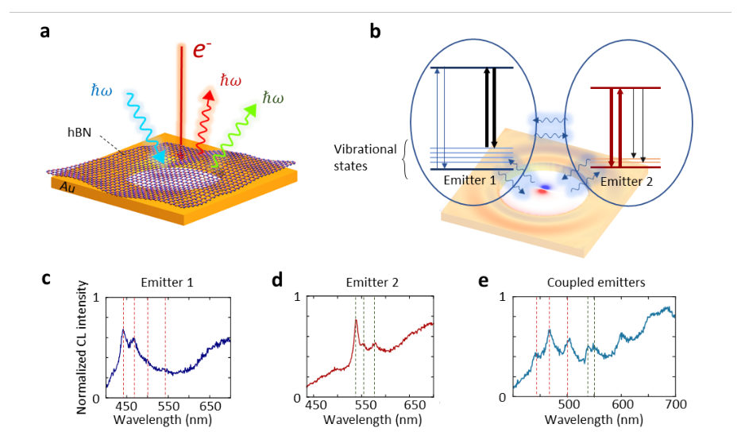
<figcaption class="paper-figure-caption"><b>Fig 1.</b> Figure 1. Experimental concept and optical response of individual and cavity-coupled quantum emitters in hBN. (a) Schematic of photon and electron excitation of hBN transferred onto an Au plasmonic void cavity, where the focused beams excite the hBN defect centers. (b) Conceptual energy- level diagram of the two emitters coupled through the confined optical mode of the plasmonic cavity. (c and d) Normalized CL spectra of the individual emitters centered at 443 nm (Emitter 1) and 537 nm (Emitter 2), with dashed lines indicating the ZPLs and their phonon sidebands. (e) CL spectrum of the cavity-coupled system, showing an energy split of the 4th vibrational resonance of Emitter 1.</figcaption>
</figure>
<figure class="paper-figure-card">
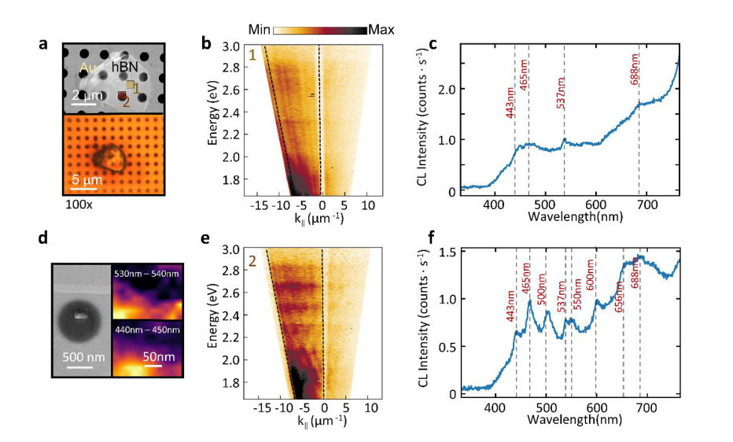
<figcaption class="paper-figure-caption"><b>Fig 2.</b> Figure 2. CL response of uncoupled and cavity-coupled hBN emitters. (a) SEM and optical image of the hBN flake on an Au plasmonic void cavity. Positions 1 and 2 indicate measurements outside and above the cavity, respectively. (b,c) Angle-resolved CL map and corresponding integrated spectrum of the uncoupled emitters acquired at position 1. (d) SEM image and hyperspectral CL maps demonstrating spatial distribution of the 443 nm and 537 nm emitters within the cavity. (e,f) Angle-resolved CL map and integrated spectrum of the cavity-coupled system acquired at position 2, revealing additionally resolved vibronic transitions and the energy split around 540 nm.</figcaption>
</figure>
<figure class="paper-figure-card">
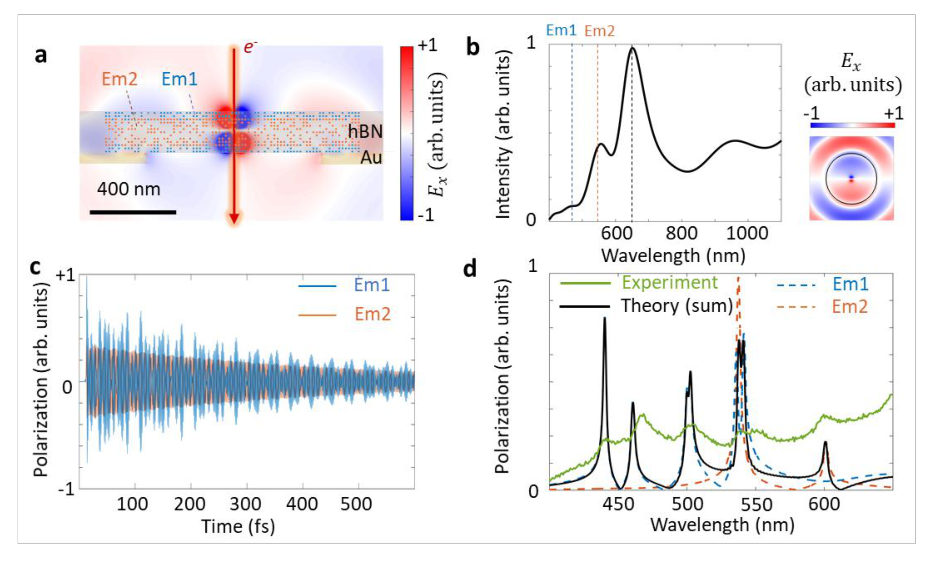
<figcaption class="paper-figure-caption"><b>Fig 3.</b> Figure 3. Maxwell-Bloch simulations of cavity-mediated emitter coupling. (a) Simulated electron- induced near-field distribution of the in-plane component of the electric field of the plasmonic void cavity in the absence of both emitters at the wavelength of 537 nm. (b) Calculated cavity resonance spectrum with the positions of emitter 1 (Em1) and emitter 2 (Em2) ZPLs peaks marked with blue and orange dashed lines, respectively. Moreover, the position of the fundamental mode of the cavity, which is a photonic mode confined in the hole is marked by blue dashed line. (c) Temporal evolution of the individual emitter polarizations, for two emitters positioned near to the rim of the cavity. (d)...</figcaption>
</figure>
<figure class="paper-figure-card">
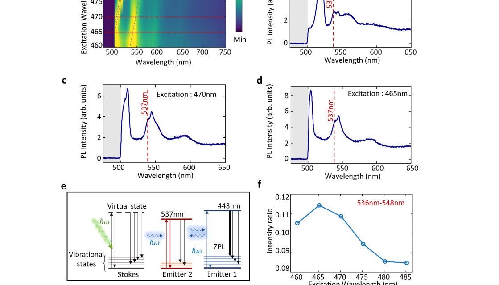
<figcaption class="paper-figure-caption"><b>Fig 4.</b> Figure 4. Phonon-assisted optical excitation of the cavity-coupled hybridized state. (a) Excitation- dependent PL map of the coupled emitter-cavity system, normalized individually to the laser intensity. The Stokes-shifted emission follows the excitation wavelength, while the hybridized emission remains limited to the same wavelengths. (b-d) Representative PL spectra for excitation wavelengths of 480, 470, and 465 nm, respectively, showing the persistence of the cavity-induced split feature under all excitations. The dashed line marks the 537 nm ZPL of Emitter 2. (e) Schematic of the phonon-assisted excitation pathway. Excitation below the 443 nm ZPL of Emitter 1 populates its vibronic...</figcaption>
</figure>
<figure class="paper-figure-card">
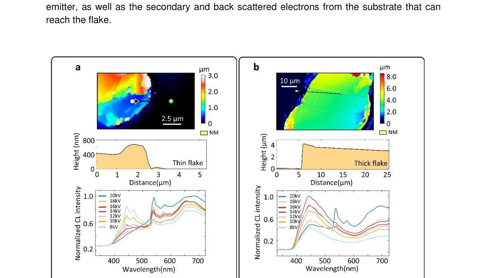
<figcaption class="paper-figure-caption"><b>Fig 5.</b> Figure 5. Thickness-dependent CL of hBN flakes. (a,b) MarSurf thickness maps (top), corresponding height profiles (middle), and normalized CL spectra (bottom) of representative thin and thick hBN flakes measured at accelerating voltages from 8 to 20 kV, and the beam current of 8 nA.</figcaption>
</figure>
</div>

<p><strong>Summary.</strong> This paper investigates the strong coupling between color center quantum emitters in hBN and a plasmonic cavity. Using CL and PL spectroscopy, the authors observed spectral splitting in one emitter's vibronic transition, confirming cavity-mediated strong coupling. The results demonstrate that vibronic pathways offer a controllable mechanism for engineering interactions between multiple quantum emitters in nanoscale photonic structures.</p>
<p><strong>Why it may be interesting.</strong> This work is highly relevant to AMO physics and quantum optics as it experimentally realizes and models cavity QED effects using solid-state emitters, demonstrating control over coupling regimes via specific vibrational modes.</p>
<details>
<summary>Detailed structure</summary>
<p><strong>Main problem.</strong> The study aims to demonstrate and characterize cavity-mediated strong coupling between multiple quantum emitters (color centers) embedded in a plasmonic nanophotonic cavity.</p>
<p><strong>Main result.</strong> The research successfully observed spectral splitting in the emission of one emitter, confirming strong coupling via vibronic transitions, while another emitter remained in the weak-coupling regime.</p>
<p><strong>Method.</strong> The work combines complementary experimental techniques, including Cathodoluminescence (CL) and Photoluminescence (PL) spectroscopy, with theoretical validation using Maxwell-Bloch simulations.</p>
<p><strong>Model / system.</strong> The system involves color centers (e.g., VACD, structural defects) in hexagonal boron nitride (hBN) coupled to a plasmonic gold (Au) void cavity. The interaction is modeled using cavity QED principles, focusing on the role of vibronic transitions.</p>
<p><strong>Key observables.</strong> Energy splitting ($\approx 36.2 	ext{ meV}$ in CL vs. $\approx 24.1 	ext{ meV}$ in PL), spectral linewidths, and the relative coupling strength (strong vs. weak).</p>
<p><strong>Important parameters / regimes.</strong> Room temperature operation, specific emitter wavelengths (443 nm, 537 nm), and the coupling energy scale relative to dissipation.</p>
<p><strong>Assumptions / limitations.</strong> The observed spectral changes are attributed to hybridization with the cavity mode, and the collective response of multiple emitters is crucial for observing the splitting.</p>
<p><strong>Figures summary.</strong> Figures compare CL/PL spectra at different positions (coupled vs. uncoupled) showing the emergence of split features near the cavity resonance, and simulations confirm the hybridization mechanism.</p>
<p><strong>Paper structure.</strong> The paper progresses by first establishing the physical system and measurement techniques, then presenting evidence for strong coupling via spectral splitting, confirming this with simulations, and finally detailing the role of vibronic pathways in controlling these interactions.</p>
</details>
<details>
<summary>Abstract</summary>
<p>Quantum emitters in hexagonal boron nitride (hBN) are promising building blocks for solid-state quantum photonics because of their bright room-temperature emission. These emitters strongly interact with lattice vibrations, which partially underpins their excitation efficiency. Here, using complementary cathodoluminescence (CL) and photoluminescence (PL) spectroscopy, we demonstrate cavity-mediated interactions between hBN quantum emitters coupled to the same plasmonic Au void cavity at the room temperature. Cathodoluminescence measurements reveal that a vibronic transition of the 443 nm emitter hybridizes with the cavity mode, giving rise to a spectrally resolved splitting, while the neighboring 537 nm emitter remains in the weak-coupling regime despite spectral overlap. The energy split of the CL peak is at the order of 36.2 meV, whereas the PL-resolved peak is approximately 24.1 meV, which is due to the collective excitations of multiple emitters per electron excitation and their mutual interactions. Maxwell-Bloch simulations reproduce the experimental spectra and identify the observed splitting as the result of cavity-induced hybridization. Excitation-dependent PL further shows that the hybridized state can be accessed through phonon-assisted excitations below the zero-phonon transition. These results demonstrate that vibronic transitions provide an effective pathway for controlling interactions between multiple quantum emitters in hybrid plasmonic nanophotonic systems.</p>
</details>
<p><sub><a href="#top">↑ back to top</a></sub></p>

<p><a id="paper-2610.10220"></a></p>
<h3 id="dynamics-of-work-extraction-in-multipartite-atomic-systems-role-of-correlations-and-relative-entropy"><a href="http://arxiv.org/abs/2610.10220v1">Dynamics of Work Extraction in Multipartite Atomic Systems: Role of Correlations and Relative Entropy</a></h3>
<p><strong>Authors:</strong> M. Ibrahim, S. J. Anwar, K. Khan<br>
<strong>Type:</strong> theory · <strong>Category:</strong> other · <strong>PDF:</strong> <a href="https://arxiv.org/pdf/2610.10220v1">https://arxiv.org/pdf/2610.10220v1</a><br>
<strong>Analysis basis:</strong> full PDF text, analyzed in chunks
<strong>Topic relevance:</strong> 🔥 <code>Tavis-Cummings &amp; cavity-many-emitter</code> <strong>4/5</strong> · <code>analog quantum simulation</code> <strong>3/5</strong> · <code>correlated / nonlocal dissipation</code> <strong>2/5</strong> · <code>driven-dissipative phase transition</code> <strong>2/5</strong> · <code>methods for driven-dissipative</code> <strong>2/5</strong> · <code>Keldysh / 2PI / non-Gaussian methods</code> <strong>1/5</strong> · <code>non-equilibrium universality</code> <strong>1/5</strong></p>
<div class="figure-strip-hint">↔ Scroll figures horizontally</div>
<div class="paper-figures-scroll">
<figure class="paper-figure-card">
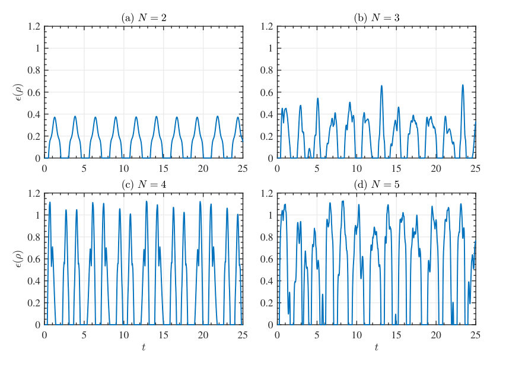
<figcaption class="paper-figure-caption"><b>Fig 1.</b> FIG. 1: (color online) Dynamics of the quantum ergotropy ǫ(ρ) for different numbers of</figcaption>
</figure>
<figure class="paper-figure-card">
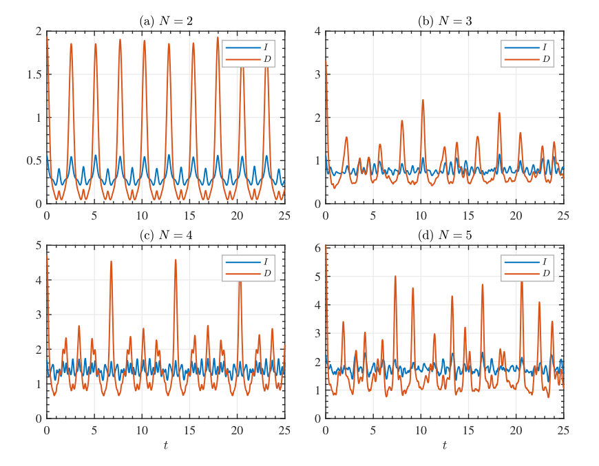
<figcaption class="paper-figure-caption"><b>Fig 2.</b> FIG. 2: (color online) Time evolution of the multipartite quantum mutual information I</figcaption>
</figure>
<figure class="paper-figure-card">
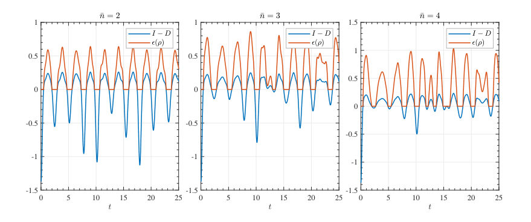
<figcaption class="paper-figure-caption"><b>Fig 3.</b> FIG. 3: (color online) Dynamics of I −D and quantum ergotropy ǫ(ρ) for different average</figcaption>
</figure>
<figure class="paper-figure-card">
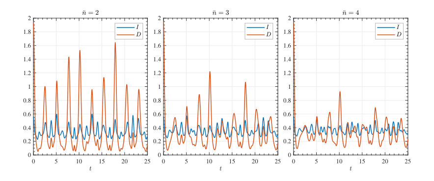
<figcaption class="paper-figure-caption"><b>Fig 4.</b> FIG. 4: (color online) Time evolution of the quantum mutual information I and quantum</figcaption>
</figure>
<figure class="paper-figure-card">
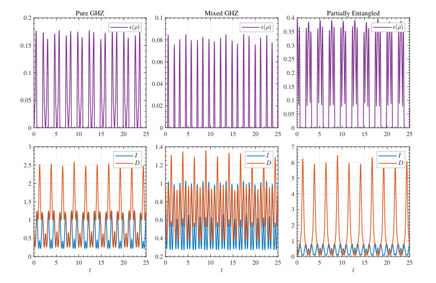
<figcaption class="paper-figure-caption"><b>Fig 5.</b> FIG. 5: (color online) Dynamics of quantum ergotropy ǫ(ρ) (upper row) and the correspond-</figcaption>
</figure>
</div>

<p><strong>Summary.</strong> This paper studies how quantum correlations dictate the maximum extractable work (ergotropy) in a system of multiple two-level atoms coupled to a thermal cavity field. By analyzing the interplay between mutual information and relative entropy, the authors show that the initial state is crucial, with partially entangled states maximizing work extraction. The findings highlight that controlling quantum correlations is key to advancing quantum power applications.</p>
<p><strong>Why it may be interesting.</strong> This work directly addresses quantum thermodynamics in cavity QED settings, providing quantitative insights into how engineered quantum correlations (beyond simple entanglement) dictate energy harvesting capabilities in open quantum systems.</p>
<details>
<summary>Detailed structure</summary>
<p><strong>Main problem.</strong> The paper investigates the dynamics of quantum ergotropy (extractable work) in multipartite atomic systems, specifically analyzing how quantum correlations and relative entropy govern this work extraction.</p>
<p><strong>Main result.</strong> The maximum extractable work is highly dependent on the initial quantum state, with partially entangled states yielding the largest and most persistent work. Furthermore, the dynamics are governed by a competition between mutual information (resource) and relative entropy (penalty).</p>
<p><strong>Method.</strong> The analysis uses theoretical derivations based on the Tavis-Cummings model Hamiltonian and employs numerical simulations to track the time evolution of quantum ergotropy, mutual information, and relative entropy.</p>
<p><strong>Model / system.</strong> The system consists of $N$ two-level atoms coupled to a quantized single-mode cavity field, modeled by the Tavis-Cummings Hamiltonian. The initial state can be varied between pure, mixed, and partially entangled configurations, and the field is subjected to thermal photons.</p>
<p><strong>Key observables.</strong> Quantum ergotropy (extractable work), multipartite quantum mutual information, and quantum relative entropy.</p>
<p><strong>Important parameters / regimes.</strong> System size ($N=2$ to $5$), average thermal photon number ($ar{n}$), and the initial state preparation parameters ($ heta, p$).</p>
<p><strong>Assumptions / limitations.</strong> The analysis is performed using the Tavis-Cummings model, and the initial state is assumed separable ($\hat{
ho}(0) = \hat{
ho}_A(0) \otimes \hat{
ho}_{th}^F$).</p>
<p><strong>Figures summary.</strong> Figures illustrate the time evolution of ergotropy, mutual information, and relative entropy as a function of system size, thermal photon number, and initial state type.</p>
<p><strong>Paper structure.</strong> The paper introduces the Hamiltonian, defines central quantities (ergotropy, mutual information, relative entropy), presents the main numerical results concerning system size and temperature effects, and concludes by summarizing the role of correlations.</p>
</details>
<details>
<summary>Abstract</summary>
<p>We investigate the dynamics of quantum ergotropy in a multipartite system of two-level atoms interacting with a quantized field. The role of multipartite quantum mutual information and quantum relative entropy is analyzed to understand how correlations and the distinguishability between the passive state and the product of local states affect the extractable work. Numerical results for systems containing two to five atoms show that the maximum ergotropy does not increase linearly with the system size, while the intervals of zero ergotropy are gradually modified and suppressed for larger systems. We also study the effect of the average thermal photon number and different initial atomic states. Increasing the thermal photon number mainly reduces the relative-entropy contribution, whereas the initial state strongly influences both the magnitude and persistence of ergotropy. Among the considered states, the partially entangled state provides the largest and more persistent extractable work, while the mixed GHZ state gives the smallest ergotropy. These results highlight the importance of multipartite correlations, thermal effects, and state preparation in controlling quantum work extraction and may be useful for future studies of quantum batteries and quantum power.</p>
</details>
<p><sub><a href="#top">↑ back to top</a></sub></p>

<p><a id="paper-2610.09745"></a></p>
<h3 id="efficient-detection-of-spectral-cluster-states"><a href="http://arxiv.org/abs/2610.09745v1">Efficient detection of spectral cluster states</a></h3>
<p><strong>Authors:</strong> M. Kalash, U. -N. Han, C. Roh, M. H. M. Passos, Y. -S. Ra, M. V. Chekhova<br>
<strong>Type:</strong> experiment · <strong>Category:</strong> quantum information and computing · <strong>PDF:</strong> <a href="https://arxiv.org/pdf/2610.09745v1">https://arxiv.org/pdf/2610.09745v1</a><br>
<strong>Analysis basis:</strong> full PDF text, analyzed in chunks
<strong>Topic relevance:</strong> 🔥 <code>quantum optics experiment</code> <strong>4/5</strong> · <code>QC/QI experiment</code> <strong>3/5</strong> · <code>interference shaping light</code> <strong>3/5</strong> · <code>quantum measurements</code> <strong>3/5</strong></p>
<div class="figure-strip-hint">↔ Scroll figures horizontally</div>
<div class="paper-figures-scroll">
<figure class="paper-figure-card">
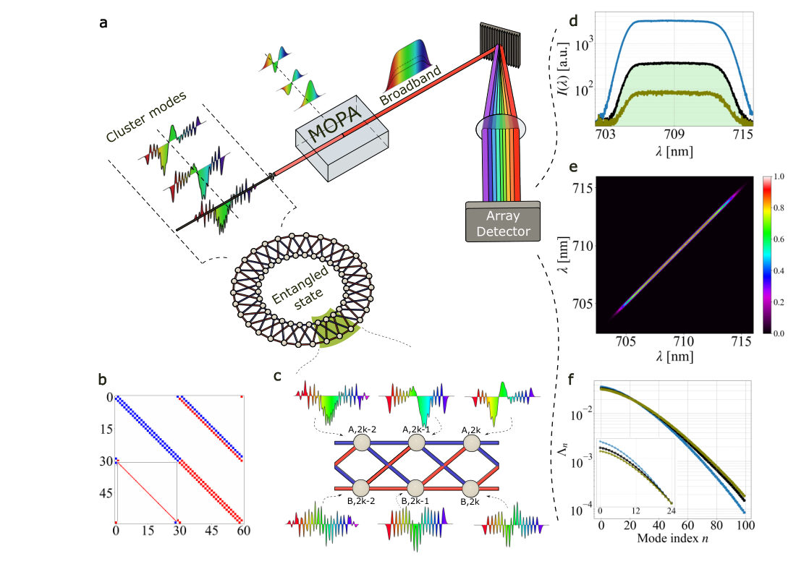
<figcaption class="paper-figure-caption"><b>Fig 1.</b> FIG. 1. Simultaneous characterization of spectral cluster states through multimode optical parametric amplification (MOPA). (a) The target state, here a 60-node dual-rail cluster state, is injected into the MOPA, which performs broadband phase-sensitive amplification. The amplified radiation is then spectrally dispersed by a diffraction grating and measured with an array detector, providing access to the spectral intensity and its correlations. (b) Adjacency matrix of the target 60-node dual-rail cluster state, with its square shown in the inset. Blue and red points correspond to connections of weights −1/2 and 1/2, respectively. (c) Spectral profiles of the cluster modes corresponding to...</figcaption>
</figure>
<figure class="paper-figure-card">
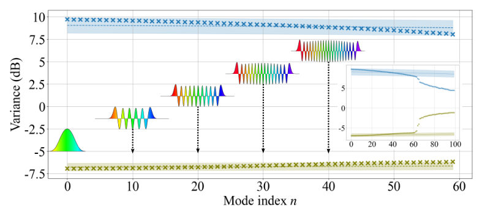
<figcaption class="paper-figure-caption"><b>Fig 2.</b> FIG. 2. Measured nullifier variances of the 60-node dual-rail cluster state. Crosses show reconstructed variances at relative phases φ = 0 (blue) and φ = π/2 (olive). The dashed lines show the theoretical values, while the shaded areas account for the uncertainty in the initial squeezing level. The colored shapes are the spectral profiles of the 1st, 10th, 20th, 30th, and 40th modes. The inset shows the reconstructed quadrature variances of the 100 strongest frequency modes of the squeezed vacuum.</figcaption>
</figure>
<figure class="paper-figure-card">
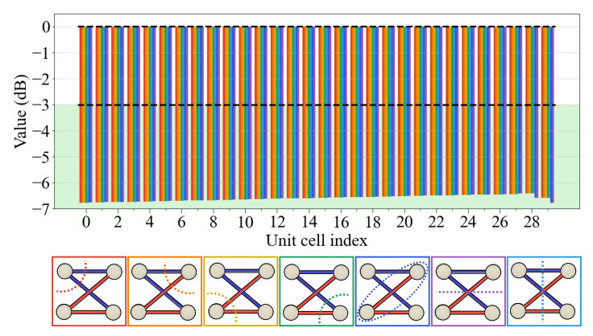
<figcaption class="paper-figure-caption"><b>Fig 3.</b> FIG. 3. Verification of multipartite entanglement. The vLF criterion is evaluated for all 30 unit cells comprising the 60-node dual-rail cluster state. The seven possible bipartitions of the chosen unit cell configuration are illustrated below the main panel, with each identified by a different color. Each bar shows the measured vLF value for the corresponding unit cell and the bipartition identified by its matching color. The horizontal dashed lines at 0 dB and −3 dB indicate the vLF bounds for the far-right bipartition (light blue) and all other bipartitions, respectively. Values below the corresponding bounds verify inseparability across each bipartition.</figcaption>
</figure>
</div>

<p><strong>Summary.</strong> This paper demonstrates the use of Multimode Optical Parametric Amplification (MOPA) to characterize a large, 60-node spectral cluster state. By measuring spectral correlations, the authors confirm strong squeezing and genuine multipartite entanglement across the entire state. This establishes MOPA as a promising, scalable platform for advanced quantum information processing in the spectral domain.</p>
<p><strong>Why it may be interesting.</strong> This work directly advances the experimental realization of high-dimensional quantum resources (spectral cluster states) and proposes a robust, loss-tolerant detection platform (MOPA) for continuous-variable quantum information processing.</p>
<details>
<summary>Detailed structure</summary>
<p><strong>Main problem.</strong> The paper addresses the challenge of efficiently detecting spectral cluster states, which are crucial resources for measurement-based quantum computation using continuous-variable quantum information.</p>
<p><strong>Main result.</strong> They successfully demonstrated the spectral multimode capability of Multimode Optical Parametric Amplification (MOPA) by characterizing a 60-node cluster state, confirming genuine multipartite entanglement across all nodes.</p>
<p><strong>Method.</strong> The measurement relies on using MOPA as an all-optical analyzer to characterize the state by measuring spectral intensity correlations and reconstructing the input quadrature variances.</p>
<p><strong>Model / system.</strong> The system involves generating and characterizing a broadband 60-node dual-rail continuous-variable cluster state using multimode squeezing via type-I collinear degenerate parametric down-conversion (PDC) in a BiBO crystal.</p>
<p><strong>Key observables.</strong> Squeezing levels (up to -7.2 dB), reconstructed nullifier variances, and the violation of the van Loock–Furusawa criterion for entanglement verification.</p>
<p><strong>Important parameters / regimes.</strong> 60-node state size, MOPA gain (G = 4.5 ± 0.2), and the spectral bandwidth (limited to 8.5 nm by dispersion).</p>
<p><strong>Assumptions / limitations.</strong> The retrieval of quadrature variance is exact only if the overlap matrix is real, and the measurement is currently limited by spectral dispersion.</p>
<p><strong>Figures summary.</strong> Figures illustrate the setup, the adjacency matrix of the 60-node state, measured spectral intensity correlations, and the reconstruction of nullifier variances across various bipartitions.</p>
<p><strong>Paper structure.</strong> The paper details the theoretical framework for using MOPA for detection, presents the experimental characterization of the 60-node state, verifies entanglement using the vLF criterion, and concludes by establishing MOPA as a scalable platform.</p>
</details>
<details>
<summary>Abstract</summary>
<p>Multimode entangled states of light are key resources for high-dimensional photonic quantum technologies, particularly for continuous-variable quantum computing and quantum information processing. Exploiting their full capabilities requires detection strategies that can efficiently and simultaneously access a large number of modes and their quantum correlations. Multimode optical parametric amplification (MOPA) provides a promising approach by amplifying multiple quadratures prior to detection, rendering the measurement robust against subsequent optical losses while enabling broadband operation. Here, we demonstrate the spectral multimode capability of MOPA by simultaneously characterizing a broadband 60-node dual-rail continuous-variable cluster state. We reconstruct the cluster-state nullifiers across the spectral modes and observe nearly uniform squeezing ranging from -7.2 to -6.5 dB. Furthermore, by evaluating the van Loock-Furusawa criterion across all relevant bipartitions, we verify genuine multipartite entanglement throughout the 60-node state. These results establish MOPA as a promising platform for scalable high-dimensional quantum information processing in the spectral domain.</p>
</details>
<p><sub><a href="#top">↑ back to top</a></sub></p>

<p><a id="paper-2610.08926"></a></p>
<h3 id="high-fidelity-inter-species-rydberg-gates-with-two-photon-driving"><a href="http://arxiv.org/abs/2610.08926v1">High-Fidelity Inter-Species Rydberg Gates with Two-Photon Driving</a></h3>
<p><strong>Authors:</strong> Shuan Wang, Kevin Singh<br>
<strong>Type:</strong> theory · <strong>Category:</strong> other · <strong>PDF:</strong> <a href="https://arxiv.org/pdf/2610.08926v1">https://arxiv.org/pdf/2610.08926v1</a><br>
<strong>Analysis basis:</strong> full PDF text, analyzed in chunks
<strong>Topic relevance:</strong> 🔥 <code>Rydberg arrays</code> <strong>4/5</strong> · <code>QC/QI experiment</code> <strong>3/5</strong> · <code>analog quantum simulation</code> <strong>2/5</strong> · <code>methods for driven-dissipative</code> <strong>2/5</strong> · <code>Keldysh / 2PI / non-Gaussian methods</code> <strong>1/5</strong> · <code>quantum measurements</code> <strong>1/5</strong></p>
<div class="figure-strip-hint">↔ Scroll figures horizontally</div>
<div class="paper-figures-scroll">
<figure class="paper-figure-card">
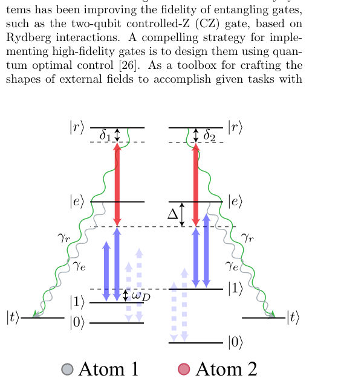
<figcaption class="paper-figure-caption"><b>Fig 1.</b> FIG. 1. Energy level diagrams for atom 1 and atom 2. For each atom, five energy levels |0⟩, |1⟩, |e⟩, |r⟩, |t⟩are consid- ered. Two optical fields are used for excitation of the atoms from |1⟩to |r⟩: a global red laser (solid red arrows) and a global blue laser with two frequency components (solid blue arrows). The two frequency components in the blue laser also act off-resonantly on qubit state |0⟩(dashed light blue ar- rows).</figcaption>
</figure>
<figure class="paper-figure-card">
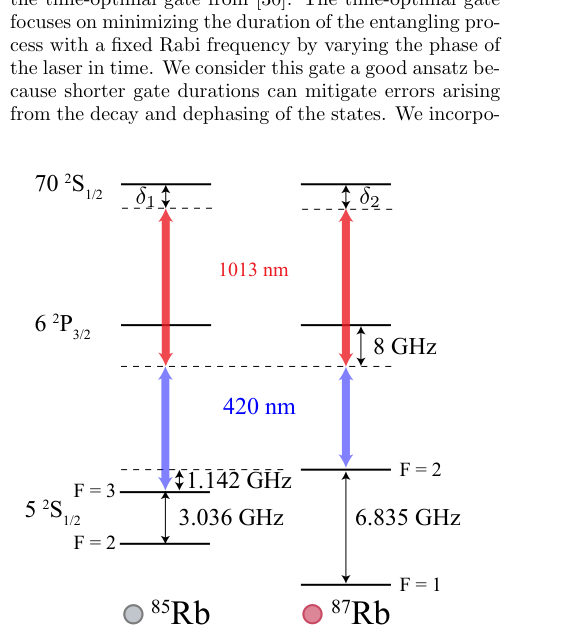
<figcaption class="paper-figure-caption"><b>Fig 2.</b> FIG. 2. Energy levels involved in the gate operation and key experimental parameters. Both atoms have |e⟩= |6P3/2⟩ and |r⟩= |70S1/2⟩, while |0⟩and |1⟩are different due to the difference in their hyperfine structure.</figcaption>
</figure>
<figure class="paper-figure-card">
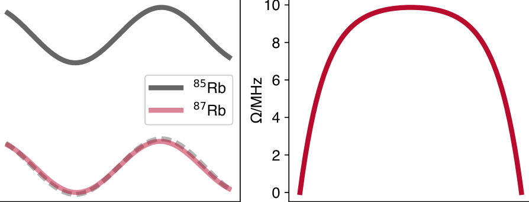
<figcaption class="paper-figure-caption"><b>Fig 3.</b> FIG. 4. A. Phase modulations for the 85Rb/87Rb high-fidelity gate. The phase functions are not restricted in [0, 2π) or (−π, π] for a more intuitive graphical representation. To illustrate the difference between the two phase functions, we subtract the fixed phase offset from the phase function of 85Rb and plot it as the dashed grey line. B. Shared pulse strength profile for 85Rb/87Rb high-fidelity gate. The vertical axis is calculated based on Eq. 6 but with varying blue Rabi frequency.</figcaption>
</figure>
<figure class="paper-figure-card">
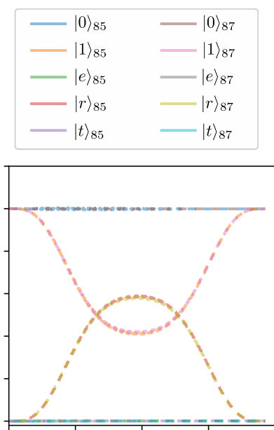
<figcaption class="paper-figure-caption"><b>Fig 4.</b> FIG. 5. Relation between state populations and time during the optimal gate.</figcaption>
</figure>
</div>

<p><strong>Summary.</strong> This paper models high-fidelity entangling gates for dual-species neutral atom arrays using two-photon Rydberg excitation. It specifically addresses and mitigates the influence of laser crosstalk, a key challenge in scaling these quantum processors. The results show that fidelities exceeding 99.8% are achievable, paving the way for robust quantum information processing.</p>
<p><strong>Why it may be interesting.</strong> This work is highly relevant as it tackles a critical hardware-level limitation (crosstalk) in a leading platform for quantum computation (neutral atoms), providing concrete, high-fidelity gate protocols.</p>
<details>
<summary>Detailed structure</summary>
<p><strong>Main problem.</strong> The primary goal is to improve the fidelity of inter-species Rydberg gates in neutral atom arrays by modeling and suppressing the detrimental effects of laser crosstalk during two-photon driving.</p>
<p><strong>Main result.</strong> The authors demonstrate that crosstalk can be suppressed to arbitrarily small levels, achieving gate fidelities greater than 99.8% using conservative parameters in an $^{85}	ext{Rb}/^{87}	ext{Rb}$ system.</p>
<p><strong>Method.</strong> The study develops a detailed model incorporating crosstalk into the Hamiltonian and uses time-optimal gate design principles to engineer the pulse sequence.</p>
<p><strong>Model / system.</strong> The system involves neutral atom arrays using dual-species isotopes ($^{85}	ext{Rb}/^{87}	ext{Rb}$) modeled as five-level systems. The dynamics are governed by a master equation incorporating the full Hamiltonian, including van der Waals interactions and laser driving fields.</p>
<p><strong>Key observables.</strong> Gate fidelity (target $>99.8\%$), unitary infidelity, and full infidelity including decoherence.</p>
<p><strong>Important parameters / regimes.</strong> Near-detuned regime, specific parameters for $^{85}	ext{Rb}$ and $^{87}	ext{Rb}$ (listed in Table I), and the gate time ($T$).</p>
<p><strong>Assumptions / limitations.</strong> The model assumes global and overlapping laser fields, and the gate design is optimized using time-optimal gate approaches.</p>
<p><strong>Figures summary.</strong> Figures illustrate energy level diagrams, the evolution of infidelity vs. time (comparing unitary vs. full), and the required phase modulations for the gate operation.</p>
<p><strong>Paper structure.</strong> The paper introduces the physical system and the problem of crosstalk, develops the comprehensive model and Hamiltonian, details the time-optimal gate design, presents the results showing high fidelity, and concludes by outlining future enhancement possibilities.</p>
</details>
<details>
<summary>Abstract</summary>
<p>Recently, neutral atom arrays have become known for their promising potential in quantum information processing. High-fidelity entangling operations are typically achieved by exciting atoms to high-lying Rydberg states through two-photon processes. To improve the performance of these systems at the hardware level, dual-species strategies have been applied to enhance readout, error correction, and reloading in neutral atom systems. However, the influence of laser crosstalk arising from two-photon excitation for dual-species systems has remained largely unexplored in the literature. Here, we develop a model that incorporates the influence of crosstalk in inter-species Rydberg gates with two-photon driving. We demonstrate that the influence of this crosstalk can be suppressed to arbitrarily small levels through appropriate gate design, with gate fidelities greater than $99.8\%$ achievable with conservative experimental parameters in the near-detuned case of an $^{85}$Rb/$^{87}$Rb system. We also outline how this fidelity can be further enhanced through improvements to the Rydberg excitation.</p>
</details>
<p><sub><a href="#top">↑ back to top</a></sub></p>

<p><a id="paper-2610.09431"></a></p>
<h3 id="quench-dynamics-and-quantum-flutter-properties-of-one-dimensional-attractive-single-spin-flipped-fermi-gases"><a href="http://arxiv.org/abs/2610.09431v1">Quench dynamics and quantum flutter properties of one-dimensional attractive single-spin flipped Fermi gases</a></h3>
<p><strong>Authors:</strong> Xiangguo Yin, Shulong Zhao<br>
<strong>Type:</strong> theory · <strong>Category:</strong> quantum gases · <strong>PDF:</strong> <a href="https://arxiv.org/pdf/2610.09431v1">https://arxiv.org/pdf/2610.09431v1</a><br>
<strong>Analysis basis:</strong> full PDF text, analyzed in chunks
<strong>Topic relevance:</strong> 🔥 <code>non-equilibrium universality</code> <strong>4/5</strong> · <code>analog quantum simulation</code> <strong>3/5</strong> · <code>scars &amp; prethermalization</code> <strong>2/5</strong> · <code>Frenkel-Kontorova</code> <strong>1/5</strong> · <code>Keldysh / 2PI / non-Gaussian methods</code> <strong>1/5</strong> · <code>methods for driven-dissipative</code> <strong>1/5</strong></p>
<div class="figure-strip-hint">↔ Scroll figures horizontally</div>
<div class="paper-figures-scroll">
<figure class="paper-figure-card">

<figcaption class="paper-figure-caption"><b>Fig 1.</b> Fig. 1 The time evolution of the opposite-spin two-body correlation function g↑↓</figcaption>
</figure>
<figure class="paper-figure-card">
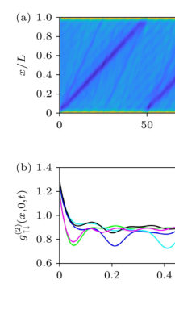
<figcaption class="paper-figure-caption"><b>Fig 2.</b> Figure 2 illustrates the scenario where the momentum of spin-down particles at the initial time exceeds the Fermi momentum. Compared with Figure 1, although the parameters differ only in total momentum, the exhibited properties are distinctly</figcaption>
</figure>
<figure class="paper-figure-card">
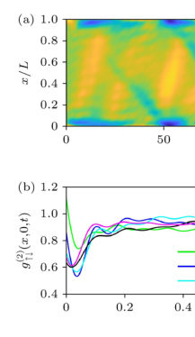
<figcaption class="paper-figure-caption"><b>Fig 3.</b> Fig. 2 The time evolution of the opposite-spin two-body correlation function g↑↓</figcaption>
</figure>
<figure class="paper-figure-card">
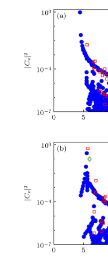
<figcaption class="paper-figure-caption"><b>Fig 4.</b> Fig. 3 The energy distribution of the occupation probabilities of different eigenstates for</figcaption>
</figure>
<figure class="paper-figure-card">
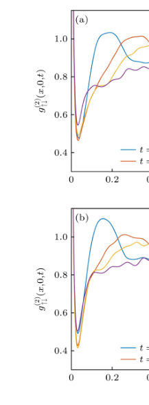
<figcaption class="paper-figure-caption"><b>Fig 5.</b> Fig. 4 The time evolution of the opposite-spin two-body correlation function g↑↓</figcaption>
</figure>
</div>

<p><strong>Summary.</strong> This paper theoretically examines how quantum systems behave when suddenly quenched in the presence of attractive interactions, focusing on 1D Fermi gases with an impurity. Using the Bethe ansatz, the authors characterize the dynamic evolution, revealing distinct behaviors based on the total momentum. Crucially, they derive a robust relationship for the quantum flutter period linked directly to the impurity's chemical potential.</p>
<p><strong>Why it may be interesting.</strong> This work provides deep theoretical insights into non-equilibrium dynamics in attractive quantum many-body systems, directly supporting experimental efforts using ultracold atoms to probe impurity interactions.</p>
<details>
<summary>Detailed structure</summary>
<p><strong>Main problem.</strong> The study investigates the quench dynamics and quantum flutter properties in one-dimensional Fermi gases with attractive interactions, an area lacking systematic theoretical treatment.</p>
<p><strong>Main result.</strong> The paper establishes that the quantum flutter period is consistently determined by the chemical potential of the impurity particle, $\Delta E = 2\pi/|\mu_{\downarrow c}|$, and details distinct dynamic behaviors in weakly versus strongly attractive regimes.</p>
<p><strong>Method.</strong> The research employs the exact Bethe ansatz solution method to simplify correlation matrix elements into finite sums, allowing for the calculation of time evolution of correlation functions.</p>
<p><strong>Model / system.</strong> The system is a one-dimensional ideal Fermi gas containing a single spin-down impurity fermion interacting attractively ($g<0$). The Hamiltonian is analyzed using the Bethe ansatz framework.</p>
<p><strong>Key observables.</strong> Time-evolution of interspin two-body correlations, impurity momentum, and the characteristic quantum flutter (periodic oscillation) of the impurity momentum.</p>
<p><strong>Important parameters / regimes.</strong> The total momentum relative to the Fermi momentum, the attractive interaction strength ($g$), and the chemical potential of the impurity ($\mu_{\downarrow c}$).</p>
<p><strong>Assumptions / limitations.</strong> The analysis relies on the Bethe ansatz for exact solutions and involves approximations such as the thermodynamic limit ($\Lambda 	o \infty$) in some derivations.</p>
<p><strong>Figures summary.</strong> Figure 1 illustrates the time evolution of the opposite-spin two-body correlation function for a specific total momentum ($Q=k_F$), showing correlation peaks and moving correlation holes.</p>
<p><strong>Paper structure.</strong> The paper systematically analyzes the problem by first introducing the Bethe ansatz solutions (Section 2), simplifying correlation functions (Section 3), analyzing quench dynamics via two-body correlations (Section 4), and finally discussing quantum flutter and revival phenomena (Section 5).</p>
</details>
<details>
<summary>Abstract</summary>
<p>Impurity nonequilibrium dynamics in quantum many-body systems is a frontier subject in ultracold-atom physics, which helps uncover microscopic mechanisms of polaron and collective excitation phenomena. Although repulsive interacting systems have been extensively investigated, attractive-interaction dynamics lacks systematic studies owing to intricate couplings among different states. We study a one-dimensional ideal Fermi gas containing an attractive spin-down impurity with initial momentum and analyze time evolution of interspin two-body correlations and impurity momentum. Using exact Bethe ansatz solutions, we simplify correlation matrix elements to finite sums for efficient calculations of eigenstate occupations and long-time dynamical evolution. In the weakly attractive regime, bound-state features appear when the total momentum is below or equal to the Fermi momentum, while mixed oscillatory behaviors arise at larger total momentum. The strongly attractive regime shows locally bound-state dominated dynamics with localized correlation peaks and scattering-induced Friedel-like oscillations. We characterize quantum flutter, the periodic oscillation of impurity momentum, and obtain consistent critical chemical potential values of the impurity via four independent Bethe ansatz approaches. This work clarifies quench dynamics and quantum flutter under attractive interactions, improves the understanding of nonequilibrium quantum many-body properties, and provides theoretical support for relevant ultracold-atom impurity experiments.</p>
</details>
<p><sub><a href="#top">↑ back to top</a></sub></p>

<p><a id="paper-2610.10357"></a></p>
<h3 id="quantum-simulation-of-the-heisenberg-xxz-model-on-a-rydberg-atom-array"><a href="http://arxiv.org/abs/2610.10357v1">Quantum simulation of the Heisenberg XXZ model on a Rydberg atom array</a></h3>
<p><strong>Authors:</strong> Matthias Werner, Artur García-Sáez<br>
<strong>Type:</strong> both · <strong>Category:</strong> other · <strong>PDF:</strong> <a href="https://arxiv.org/pdf/2610.10357v1">https://arxiv.org/pdf/2610.10357v1</a><br>
<strong>Analysis basis:</strong> full PDF text, analyzed in chunks
<strong>Topic relevance:</strong> 🔥 <code>Rydberg arrays</code> <strong>4/5</strong> · 🔥 <code>analog quantum simulation</code> <strong>4/5</strong> · <code>QC/QI experiment</code> <strong>3/5</strong></p>
<div class="figure-strip-hint">↔ Scroll figures horizontally</div>
<div class="paper-figures-scroll">
<figure class="paper-figure-card">
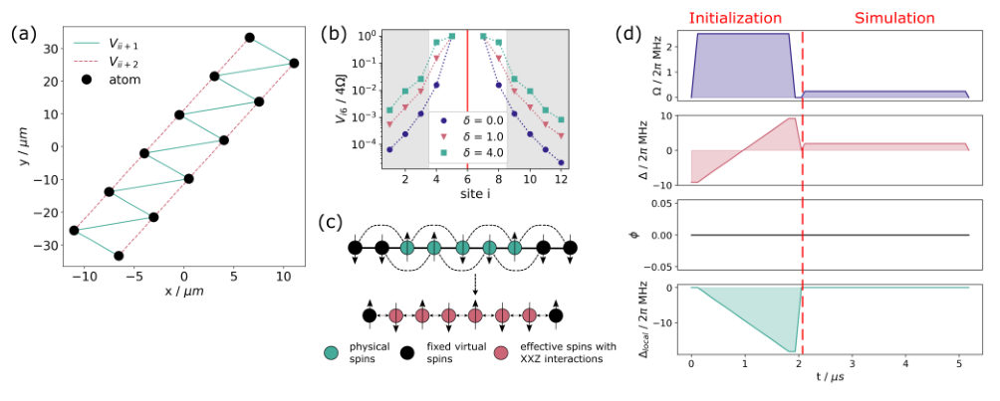
<figcaption class="paper-figure-caption"><b>Fig 1.</b> Figure 1. (a): Arrangement of Rydberg atoms in the xy-plane as a chain with nearest-neighbor and next-nearest-neighbor interactions, depicted as solid green and dashed red lines respectively. Other interactions can be neglected due to the decay with the sixth power of the atom distance; (b): Interaction strength of atom j = 5 with all other atoms for atom arrangements corresponding to anisotropies δ = 0 (blue dots), δ = 1.0 (red triangles) and δ = 4.0 (green squares). The white background indicates the nearest neighbor and next-nearest-neighbor interactions, while the gray background indicates all interactions beyond these two. The gray shaded interactions are undesired for all values of δ,...</figcaption>
</figure>
<figure class="paper-figure-card">
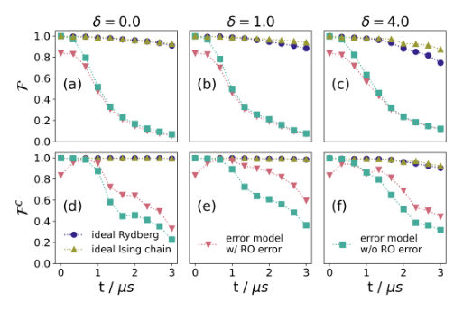
<figcaption class="paper-figure-caption"><b>Fig 2.</b> Figure 2. Fidelities of an ideal Rydberg simulation (blue dots), for the full error model (red triangles) and for the same error model, but without RO error (green squares) compared to the exact Heisenberg XXZ evolution in the XY phase (a, d), at the critical point (b, e) and in the Ising phase (c, f). Additionally, we show the fidelities for an ideal Ising chain, i.e. the Hamiltonian of the Rydberg system where the un- wanted interactions are set to zero (yellow upward-triangles). (a, b, c): the quantum state fidelity F in Eq. (17); (d, e, f): the classical fidelity Fc in Eq. (18).</figcaption>
</figure>
<figure class="paper-figure-card">
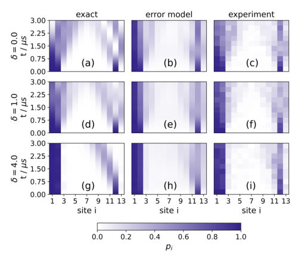
<figcaption class="paper-figure-caption"><b>Fig 3.</b> Figure 3. Time evolution of the site populations pi Eq. (19) as a function of time t for the anisotropic XXZ chain with a total of three excitations, two initialized at sites 1 and 2 and one at site 12. We compare the exact solution (a, d, g) with the numerical simulation of the error model (b, e, h) and the experimental data from Aquila (c, f, i) for the system in the XY phase δ = 0.0 (a, b, c), at the critical point δ = 1.0 (d, e, f) and in the Ising phase δ = 4.0 (g, h, i).</figcaption>
</figure>
<figure class="paper-figure-card">

<figcaption class="paper-figure-caption"><b>Fig 4.</b> Figure 4. Time evolution of the normalized correlation matrix Γij/ maxij Γij for the exact model (top row), the error model (middle row) and the experimental data (bottom row) for the XY phase with δ = 0.0 (a), the critical point with δ = 1.0 (b) and in the Ising phase with δ = 4.0 (c). In each subfigure, we show the normalized correlation matrix at the start of the simulation at t = 0.0µs (left column), in the approximate middle of the simulation t = 1.67µs (middle column) and at the end of the simulation at t = 3.0µs (right column).</figcaption>
</figure>
<figure class="paper-figure-card">

<figcaption class="paper-figure-caption"><b>Fig 5.</b> Figure 5. Error metrics εp Eq. (22) (a, b, c), and εC Eq. (23) (d, e, f) for the experimental data being compared to once the exact time evolution (blue dots) and once the error model (red triangles) for δ = 0.0 (a, d), δ = 1.0 (b, e) and δ = 4.0 (c, f). The markers are the mean values from bootstrapping the experimental data 100 times and the error bars indicate the 95%-confidence interval.</figcaption>
</figure>
</div>

<p><strong>Summary.</strong> This paper details the quantum simulation of the Heisenberg XXZ model using Rydberg atom arrays. The core innovation is using domain wall encoding to simulate the full XXZ model by mapping it onto an effective Ising Hamiltonian realizable on the hardware. The authors successfully validate this method by reproducing expected physical behavior across different quantum phases while rigorously accounting for realistic experimental noise sources.</p>
<p><strong>Why it may be interesting.</strong> This work is highly relevant as it pushes the boundaries of quantum simulation by demonstrating how to engineer complex Hamiltonians (like XXZ) on platforms (Rydberg atoms) whose native interactions might otherwise be limited, thereby expanding the accessible model space for quantum many-body physics.</p>
<details>
<summary>Detailed structure</summary>
<p><strong>Main problem.</strong> The paper addresses the challenge of simulating the Heisenberg XXZ model on quantum hardware by implementing a method that allows for the simulation of necessary coupling types beyond conventional ZZ-couplings.</p>
<p><strong>Main result.</strong> The authors successfully demonstrate the implementation of this simulation method on a Rydberg atom quantum device, reproducing the expected dynamical behavior across XY, Ising, and critical phases of the model.</p>
<p><strong>Method.</strong> The simulation employs domain wall encoding to map the target XXZ spin chain Hamiltonian onto an effective Ising Hamiltonian, which is then realized using the native interactions of the Rydberg atom array.</p>
<p><strong>Model / system.</strong> The physical platform is a Rydberg atom array (e.g., QuEra's Aquila device) used as an analog quantum simulator. The target model is the Heisenberg XXZ chain, and the simulation relies on mapping its dynamics onto an effective Ising model via domain wall encoding.</p>
<p><strong>Key observables.</strong> Site populations ($p_i$), normalized correlations ($\Gamma_{ij}/\max_{ij} \Gamma_{ij}$), and fidelity (state and classical).</p>
<p><strong>Important parameters / regimes.</strong> Anisotropy ($\delta$) is probed across XY ($\delta=0.0$), isotropic ($\delta=1.0$), and Ising ($\delta=4.0$) regimes. Error sources include thermal motion, laser fluctuations, and readout errors.</p>
<p><strong>Assumptions / limitations.</strong> The method assumes that undesired interactions beyond next-nearest-neighbor are negligible, and the error model incorporates specific approximations for disorder and readout errors.</p>
<p><strong>Figures summary.</strong> Figures illustrate the zig-zag atom arrangement realizing required interactions, the mapping process from XXZ to Ising via domain wall encoding, and comparisons of fidelity and correlation functions across different error models and anisotropies.</p>
<p><strong>Paper structure.</strong> The paper systematically develops the theoretical framework by first defining the required Hamiltonian, then detailing the domain wall encoding transformation, and finally implementing and analyzing the simulation results using a comprehensive error model that includes disorder and readout errors.</p>
</details>
<details>
<summary>Abstract</summary>
<p>A major application of analog quantum hardware is quantum simulation, where a system evolves over time according to a given Hamiltonian. One challenge when implementing the Hamiltonian on a programmable quantum simulator is the availability of distinct coupling types, many of which go beyond the conventional ZZ-couplings found in Ising Hamiltonians that are naturally implemented by various platforms. In prior work, we have developed a method based on domain wall encoding to simulate one-dimensional spin chains using only Ising Hamiltonians, which would otherwise require XX+YY-couplings as well. Here, we implement the method on a commercially accessible Rydberg atom quantum device, and simulate the time evolution of the Heisenberg XXZ model with various anisotropies. We successfully probe the XY and Ising phases of the model and reproduce the qualitative behavior of several one- and two-body observables in both phases, as well as at the critical point. Our work augments the toolbox to simulate canonical quantum many-body systems on analog quantum simulators.</p>
</details>
<p><sub><a href="#top">↑ back to top</a></sub></p>

<p><a id="paper-2610.10294"></a></p>
<h3 id="sub-shot-noise-mid-infrared-photothermal-measurements-using-twin-beams"><a href="http://arxiv.org/abs/2610.10294v1">Sub-shot-noise mid-infrared photothermal measurements using twin beams</a></h3>
<p><strong>Authors:</strong> Kazuki Hashimoto, Takuro Ideguchi<br>
<strong>Type:</strong> experiment · <strong>Category:</strong> other · <strong>PDF:</strong> <a href="https://arxiv.org/pdf/2610.10294v1">https://arxiv.org/pdf/2610.10294v1</a><br>
<strong>Analysis basis:</strong> full PDF text, analyzed in chunks
<strong>Topic relevance:</strong> 🔥 <code>quantum optics experiment</code> <strong>4/5</strong> · <code>quantum measurements</code> <strong>3/5</strong> · <code>interference shaping light</code> <strong>1/5</strong></p>
<div class="figure-strip-hint">↔ Scroll figures horizontally</div>
<div class="paper-figures-scroll">
<figure class="paper-figure-card">

<figcaption class="paper-figure-caption"><b>Fig 1.</b> Fig. 1. Principle of sub-shot noise MIP measurement with twin beams.(a) Schematic of sub-shot-noise MIP measurement system. BPF: band-pass filter, FA: fiber amplifier, SHG: second-harmonic generation, PPLN: periodically poled lithium niobate, CW: continuous wave, AOM: acousto-optic modulator, ATT: attenuator, BPD: balanced photodetector, RFSA: radio-frequency spectrum analyzer. (b) Noise reduction with seeded twin beams. When the overall photon number incident on the BPD is the same, the variance is reduced to around 1/cosh(2𝑟0) relative to that of a coherent beam, where 𝑟0 is the squeezing parameter. 𝑁0: mean photon number of a seed beam, 𝑁𝑎(𝑏): photon-number operators of signal (idler),...</figcaption>
</figure>
<figure class="paper-figure-card">

<figcaption class="paper-figure-caption"><b>Fig 2.</b> Fig. 2. Seeded twin-beam evaluation. (a) Twin-beam spectra (blue) generated via the seeded OPA with a pump power of 14.2 mW. The black line shows the seed beam spectrum measured without the pump beam. (b) The signal (blue) and idler (blue-green) spectral intensity versus the pump power. The dotted blue and blue-green indicate the fitting curves for signal and idler, respectively. The black line shows 𝑟0 versus pump power obtained from the idler fitting results. (c) Signal (blue) and idler (blue-green) fractions of the total intensity as a function of 𝑟0.</figcaption>
</figure>
<figure class="paper-figure-card">

<figcaption class="paper-figure-caption"><b>Fig 3.</b> Fig. 3. Noise reduction achieved by seeded twin beams. (a) RF noise power of the twin beams with 𝑁0 = 3.6 x 105 measured with balanced detection (blue), compared with the shot-noise level of a coherent beam (red). The red dashed line represents a linear fit to the shot-noise level of the coherent beam. The x- and y-axis error bars represent the standard deviations of 𝑁tot and the standard deviation of the RF noise power over time, respectively. (b) Corresponding NRF as a function of 𝑟0 with (blue) and without (sky-blue) the detector noise subtraction. The y-axis error bars represent the standard deviations of the NRFs obtained by propagating the standard deviations of the RF noise powers...</figcaption>
</figure>
<figure class="paper-figure-card">

<figcaption class="paper-figure-caption"><b>Fig 4.</b> Fig. 4. MIP measurement of water. (a) MIP signal (RF power) measured using an RFSA in full-span mode. (b) The peak of the MIP signal as a function of 𝑁pr. The dashed line represents the quadratic fit. (c) The noise floor as a function of 𝑁tot. The solid line represents the linear fit. The y-axis error bars represent the standard deviation of the RF noise power measured over the frequency range from 1.9990 to 1.9998 MHz.</figcaption>
</figure>
<figure class="paper-figure-card">

<figcaption class="paper-figure-caption"><b>Fig 5.</b> Fig. 5. MIP measurement with twin beams. Blue: RF spectra measured using twin beams with 𝑁tot and 𝑁pr of 3.5x106 and 2.6x106, respectively. Dashed black: RF spectra measured using a coherent beam with 𝑁tot and 𝑁pr of 3.4x106 and 2.1x106, respectively.</figcaption>
</figure>
</div>

<p><strong>Summary.</strong> This paper presents a method to enhance the sensitivity of Mid-infrared photothermal measurements by utilizing quantum noise reduction. By generating and detecting twin beams via seeded OPA, the measurement noise is suppressed below the standard shot-noise limit. This quantum enhancement allows for lower probe powers, mitigating sample damage while maintaining or improving the signal-to-noise ratio.</p>
<p><strong>Why it may be interesting.</strong> This work is highly relevant to quantum optics and open quantum systems, demonstrating a practical application of quantum noise reduction techniques (squeezing) to a complex, non-linear sensing modality (MIP).</p>
<details>
<summary>Detailed structure</summary>
<p><strong>Main problem.</strong> The primary goal is to improve the sensitivity of Mid-infrared photothermal (MIP) measurements by reducing measurement noise below the fundamental shot-noise limit.</p>
<p><strong>Main result.</strong> The authors successfully demonstrated sub-shot-noise MIP measurements using twin beams generated via seeded optical parametric amplification, achieving significant SNR enhancements over conventional coherent-beam detection.</p>
<p><strong>Method.</strong> The technique relies on balanced detection of quantum-squeezed twin beams to suppress noise below the shot-noise level, which is then applied to the MIP measurement setup.</p>
<p><strong>Model / system.</strong> The system uses seeded Optical Parametric Amplification (OPA) in a PPLN waveguide to generate twin beams. The MIP measurement itself involves using a modulated QCL as the pump source and probing the sample's refractive index change.</p>
<p><strong>Key observables.</strong> Signal-to-Noise Ratio (SNR), Noise Reduction Factor (NRF), and the measured MIP signal power as a function of probe power.</p>
<p><strong>Important parameters / regimes.</strong> Squeezing parameter ($r_0$), optical loss (transmittances $T_a, T_b$), and the modulation frequency ($f_{mod}$).</p>
<p><strong>Assumptions / limitations.</strong> The analysis assumes statistical independence of photocurrent and electronic noise, and that the noise reduction factor is robust against certain levels of optical loss when balanced detection is used.</p>
<p><strong>Figures summary.</strong> Figures illustrate the principle of sub-shot-noise measurement, compare RF noise power between twin beams and coherent beams, and show the MIP signal scaling for both quantum and classical probe sources.</p>
<p><strong>Paper structure.</strong> The paper progresses from establishing the need for noise reduction in MIP measurements, detailing the generation and characterization of sub-shot-noise twin beams, and finally applying this quantum enhancement to the actual MIP sensing measurement.</p>
</details>
<details>
<summary>Abstract</summary>
<p>Mid-infrared photothermal (MIP) measurement probes refractive-index changes induced by mid-infrared (MIR) absorption using visible or near-infrared light and has recently emerged as a powerful modality for MIR spectro-imaging in the life sciences. Reducing measurement noise allows the probe power to be lowered without compromising the signal-to-noise ratio (SNR), thereby mitigating the risk of sample damage. However, even in the absence of classical noise, the SNR of conventional MIP measurements using a classical coherent probe is fundamentally limited by shot noise. Here, we demonstrate sub-shot-noise MIP measurement using twin beams generated through seeded optical parametric amplification. Balanced detection of the twin beams suppresses the noise by more than 5 dB below the shot-noise level established using a coherent beam. As a proof-of-principle demonstration, we measure the MIP signal from liquid water using balanced twin-beam detection and achieve an SNR enhancement of more than 2 dB over the balanced coherent-beam detection.</p>
</details>
<p><sub><a href="#top">↑ back to top</a></sub></p>

<p><a id="paper-2610.09545"></a></p>
<h3 id="time-bin-properties-of-photon-pairs-from-a-2ghz-waveguide-resonator"><a href="http://arxiv.org/abs/2610.09545v1">Time-Bin Properties of Photon Pairs from a 2GHz Waveguide Resonator</a></h3>
<p><strong>Authors:</strong> Stefan Kazmaier, Kaisa Laiho<br>
<strong>Type:</strong> both · <strong>Category:</strong> quantum information and computing · <strong>PDF:</strong> <a href="https://arxiv.org/pdf/2610.09545v1">https://arxiv.org/pdf/2610.09545v1</a><br>
<strong>Analysis basis:</strong> full PDF text, analyzed in chunks
<strong>Topic relevance:</strong> 🔥 <code>quantum optics experiment</code> <strong>4/5</strong> · <code>interference shaping light</code> <strong>3/5</strong> · <code>QC/QI experiment</code> <strong>1/5</strong></p>
<div class="figure-strip-hint">↔ Scroll figures horizontally</div>
<div class="paper-figures-scroll">
<figure class="paper-figure-card">

<figcaption class="paper-figure-caption"><b>Fig 1.</b> Figure 1. Simulation in the MRM case. (a) presents the JSI in terms of the signal and idler frequencies νs,i while (b) &amp; (c) show the spectral marginal distributions of signal and idler, respectively. (d) illustrates the 2D Fourier transform into the time domain resulting in the JTI, while (e) &amp; (f) show the time bins of signal and idler, respectively. We have limited the frequency scales in (a) and the time scale in (b) for better visualization of the resonator modes.</figcaption>
</figure>
<figure class="paper-figure-card">

<figcaption class="paper-figure-caption"><b>Fig 2.</b> Figure 2. Simulation in the SRM case. (a) presents the JSI in terms of the signal and idler frequencies νs,i while (b) &amp; (c) show the spectral marginal distributions of signal and idler, respectively. (d) illustrates the 2D Fourier transform into the time domain resulting in the JTI, while (e) &amp; (f) show the time bins of signal and idler, respectively.</figcaption>
</figure>
<figure class="paper-figure-card">

<figcaption class="paper-figure-caption"><b>Fig 3.</b> Figure 3. Experimental arrangement. For more details see the main text. Abbreviations: Pol. filter = polarization filter; HWP = half-wave plate; PBS = polarizing beam splitter; DM = dichroic mirror; BPF = bandpass filter; SNSPD = superconducting nanowire single photon detector.</figcaption>
</figure>
<figure class="paper-figure-card">

<figcaption class="paper-figure-caption"><b>Fig 4.</b> Figure 4. Linear transmission measurement for the extraordinary and ordinary crystal axis of the PPLN WG resonator together with the transmission window of the fiber coupled variable bandpass filter. The latter is applied in order to filter a SRM from the PDC emission.</figcaption>
</figure>
<figure class="paper-figure-card">

<figcaption class="paper-figure-caption"><b>Fig 5.</b> Figure 5. Histogram of coincidence counts occurring between signal and idler at the pump powers of (a) 1.5 mW and (b) 3.0 mW. The counts in the central peak (red) contribute to the coincidences, while the side peaks (green) contribute to the accidentals with a black horizontal line as a guide to the eye. The spurious counts that lie outside the considered time gates are colored in blue.</figcaption>
</figure>
</div>

<p><strong>Summary.</strong> This paper investigates the time-bin characteristics of photon pairs generated using a PPLN waveguide resonator. By comparing measurements in multi-mode versus single-mode operation, the authors demonstrate that spectral filtering removes interference fringes and that the resulting time-bin profiles are dictated by the optical losses of the signal and idler photons. These findings are crucial for engineering pulsed quantum sources for future quantum networks.</p>
<p><strong>Why it may be interesting.</strong> This work directly addresses the temporal characterization of entangled photon sources, which is fundamental for developing robust quantum communication protocols and quantum networks.</p>
<details>
<summary>Detailed structure</summary>
<p><strong>Main problem.</strong> The study focuses on characterizing the time-bin properties of degenerate photon pairs generated via parametric down-conversion (PDC) in a waveguide resonator.</p>
<p><strong>Main result.</strong> The time-bin duration varies significantly based on the optical losses of the signal and idler photons, and the presence of spectral filtering (SRM) removes interference fringes seen in the multi-mode regime (MRM).</p>
<p><strong>Method.</strong> The authors combine direct time-domain measurements of coincidence counts with theoretical simulations utilizing the two-dimensional Fourier transform of the Joint Spectral Intensity (JSI).</p>
<p><strong>Model / system.</strong> The physical system is a Fabry-Pérot (FP) waveguide resonator made of periodically-poled Lithium Niobate (PPLN), used as the source for degenerate photon pairs in the telecom C-band.</p>
<p><strong>Key observables.</strong> Time-bin durations, Joint Spectral Intensity (JSI), Joint Temporal Intensity (JTI), and the Coincidences-to-Accidentals Ratio (CAR).</p>
<p><strong>Important parameters / regimes.</strong> 2 GHz bandwidth, sub-nanosecond pulse shapes, and the Free Spectral Range (FSR) of the resonator ($\approx 6.7 	ext{ GHz}$).</p>
<p><strong>Assumptions / limitations.</strong> The analysis assumes a Gaussian pump spectrum and treats the FP Resonator classically; simulation requires choosing linear loss parameters ($\alpha$) for qualitative agreement.</p>
<p><strong>Figures summary.</strong> Figures illustrate the JSI, spectral marginals, JTI, and measured/simulated time bins for both multi-resonator mode (MRM) and single-resonator mode (SRM) operation, showing the disappearance of interference fringes upon filtering.</p>
<p><strong>Paper structure.</strong> The paper progresses by first establishing the theoretical framework using JSI and 2D Fourier transforms, then presenting experimental measurements comparing the MRM and SRM regimes, and finally analyzing the resulting time-bin characteristics.</p>
</details>
<details>
<summary>Abstract</summary>
<p>We produce degenerate photon pairs called signal and idler via parametric down-conversion (PDC) in a Fabry-Pérot waveguide resonator having close to a 2GHz bandwidth in the telecom C-band. Our PDC source is based on a type-II periodically-poled Lithium Niobate waveguide with high-reflecting end facets forming the resonator. We measure the strength of the photon-pair correlation between signal and idler after selecting a single resonator mode from the multimode PDC emission. Thereafter, we investigate their sub-nanosecond long pulse shapes, in other words the time bins, with standard photon counting. We find that the time-bin durations vary significantly from each other, which can be predicted by the different optical losses of the cross-polarized signal and idler. Further, we simulate the temporal properties of signal and idler via the Fourier transform of their joint spectral characteristics. Our results deliver empiric insight about the time bins of photon pairs and are relevant for driving future quantum networks at the edge to narrow bandwidths but nevertheless in the pulsed regime.</p>
</details>
<p><sub><a href="#top">↑ back to top</a></sub></p>

<p><a id="paper-2610.10217"></a></p>
<h3 id="engineering-of-chirped-apodized-sources-for-quantum-spectroscopy"><a href="http://arxiv.org/abs/2610.10217v1">Engineering of Chirped Apodized Sources for Quantum Spectroscopy</a></h3>
<p><strong>Authors:</strong> Linda Sansoni, Max Widarsson, Patrick Mutter, Andrea Chiuri<br>
<strong>Type:</strong> both · <strong>Category:</strong> other · <strong>PDF:</strong> <a href="https://arxiv.org/pdf/2610.10217v1">https://arxiv.org/pdf/2610.10217v1</a><br>
<strong>Analysis basis:</strong> full PDF text, analyzed in chunks
<strong>Topic relevance:</strong> 🔥 <code>quantum optics experiment</code> <strong>4/5</strong> · <code>interference shaping light</code> <strong>3/5</strong></p>
<div class="figure-strip-hint">↔ Scroll figures horizontally</div>
<div class="paper-figures-scroll">
<figure class="paper-figure-card">

<figcaption class="paper-figure-caption"><b>Fig 1.</b> Figure 1: Effect of nonlinear-chirp apodization on the QPM structures and their calculated phase- matching spectra. (a) Poling-period profile for the 2 mm crystal. The black dotted line indicates the transition from linear chirp to apodization. (b) Corresponding phase-matching spectra. (c) Poling- period profile for the 30 mm crystal. The black dotted line indicates the transition from linear chirp to apodization. (d) Corresponding phase-matching spectra.</figcaption>
</figure>
<figure class="paper-figure-card">

<figcaption class="paper-figure-caption"><b>Fig 2.</b> Figure 2: Simulated spectrum of a 2 mm-long nonlinear-chirp-apodized ppKTP crystal pumped at 532 nm. The nominal poling period varies from 12.38 µm to 13.71 µm, and the resulting idler spectrum extends from approximately 2.6 µm to 3.6 µm.</figcaption>
</figure>
<figure class="paper-figure-card">

<figcaption class="paper-figure-caption"><b>Fig 3.</b> Figure 3: Experimental Setup for characterization of the chirped apodized source. Here a pulsed laser at 532 nm (8 ps pulses with PRR=40 MHz) impinges on the caKTP crystal. Pairs of single photons in the VIS and IR range are produced and split on a dichroic mirror (DM). The IR photon goes through a target sample (T) and is then detected by a single pixel SPAD; the VIS photon is spectrally analyzed by means of a spectrograph (S) and an intensified CCD camera (iCCD). Coincidences between the detector and the camera are recorded (&amp;).</figcaption>
</figure>
<figure class="paper-figure-card">

<figcaption class="paper-figure-caption"><b>Fig 4.</b> Figure 4: (a) Spectrum of a 2mm-long caKTP. The blue curve reports the correlated spectrum, while the orange dashed line refers to the uncorrelated measurements where the background - counts when the SPDC source is blocked - has been subtracted. The reduced spectral width of the correlated spectrum is due to limited detection efficiency of the telecom detector for wavelengths above 1600 nm. (b) Correlated spectra of 1mm- (red curve) and 2mm-long crystals (blue curve). It is clear that the longer the crystal, the broader the spectrum. In these particular cases we have a FWHM of ≈28nm (signal) / ≈103nm (idler) for the 1mm crystal, while the 2mm source produces bandwidths of ≈36nm (signal) and...</figcaption>
</figure>
<figure class="paper-figure-card">

<figcaption class="paper-figure-caption"><b>Fig 5.</b> Figure 5: Uncorrelated spectrum of a 1mm-long caKTP for different temperatures, namely 40◦C (blue curve), 60◦C (orange curve) and 80◦C (green curve). Increasing the temperature the signal spectrum shifts toward lower wavelengths, while the idler spectrum toward higher wavelengths.</figcaption>
</figure>
</div>

<p><strong>Summary.</strong> This paper details the engineering of chirped and apodized nonlinear crystals, such as KTP, to create superior quantum light sources. By tailoring the crystal's nonlinear profile, the authors achieve unprecedented broadband emission while suppressing spectral ripples. This advancement provides a powerful tool for next-generation quantum spectroscopy and sensing applications.</p>
<p><strong>Why it may be interesting.</strong> This work is highly relevant to quantum optics and open quantum systems, as it details the engineering of quantum light sources—a crucial resource for quantum information processing and sensing protocols.</p>
<details>
<summary>Detailed structure</summary>
<p><strong>Main problem.</strong> The core problem is developing highly efficient, spectrally engineered, and bright quantum light sources necessary for advanced quantum sensing and spectroscopy applications.</p>
<p><strong>Main result.</strong> The authors report that engineering chirped and apodized nonlinear crystals (caKTP) successfully generates broadband, flat-spectrum correlated photon pairs, enabling quantum spectroscopy over wide spectral ranges with shorter measurement times.</p>
<p><strong>Method.</strong> The methodology involves theoretical simulation and experimental characterization of nonlinear processes like SPDC using tailored crystal geometries (chirping and apodization) to control the spectral output.</p>
<p><strong>Model / system.</strong> The physical system is the nonlinear crystal, specifically KTP, which is engineered with a chirped and apodized nonlinear coefficient profile. The process relies on Type-0 Spontaneous Parametric Down-Conversion (SPDC) to generate correlated photon pairs.</p>
<p><strong>Key observables.</strong> Broad spectral bandwidth, flat intensity distribution, high pair generation rate, and preservation of quantum correlations.</p>
<p><strong>Important parameters / regimes.</strong> Nonlinear crystal length (e.g., 2 mm vs 30 mm), pump wavelength (e.g., 532 nm), and the degree of chirp/apodization.</p>
<p><strong>Assumptions / limitations.</strong> The work assumes the ability to implement precise nonlinear coefficient engineering (chirping/apodization) and operates under conditions where quantum correlations are maintained despite high count rates.</p>
<p><strong>Figures summary.</strong> Figures illustrate the effect of nonlinear-chirp apodization on phase-matching spectra, showing broadband visible-MIR generation, and detail the experimental setup for source characterization.</p>
<p><strong>Paper structure.</strong> The paper progresses from identifying the need for engineered quantum sources, detailing the theoretical basis of nonlinear-chirp apodization, presenting simulation results demonstrating bandwidth enhancement, and concluding with the practical advantages for quantum spectroscopy.</p>
</details>
<details>
<summary>Abstract</summary>
<p>Quantum sources of light are of paramount importance for the development of photonic quantum technologies. The growing demand for bright, efficient, and spectrally engineered photonic sources for applications in quantum sensing, spectroscopy, and imaging has motivated the development of tailored nonlinear crystals. Here, we report on the development and characterization of chirped, apodized KTP crystals specifically engineered for quantum spectroscopy. Our source exhibits an unprecedented bandwidth in a highly non-degenerate configuration, demonstrating its potential to support quantum spectroscopy protocols over broad spectral ranges while enabling significantly shorter measurement times.</p>
</details>
<p><sub><a href="#top">↑ back to top</a></sub></p>

<p><a id="paper-2610.10432"></a></p>
<h3 id="dynamically-protected-erasure-qubit-via-low-frequency-charge-driving"><a href="http://arxiv.org/abs/2610.10432v1">Dynamically protected erasure qubit via low-frequency charge driving</a></h3>
<p><strong>Authors:</strong> Ahmed Hajr, Ke Wang, Bingcheng Qing, Akel Hashim, Bibek Bhandari, Dominic Briseño-Colunga, Justin Dressel, Andrew N. Jordan, Irfan Siddiqi<br>
<strong>Type:</strong> experiment · <strong>Category:</strong> quantum information and computing · <strong>PDF:</strong> <a href="https://arxiv.org/pdf/2610.10432v1">https://arxiv.org/pdf/2610.10432v1</a><br>
<strong>Analysis basis:</strong> full PDF text, analyzed in chunks
<strong>Topic relevance:</strong> 🔥 <code>QC/QI experiment</code> <strong>4/5</strong> · <code>driven-dissipative phase transition</code> <strong>1/5</strong> · <code>quantum measurements</code> <strong>1/5</strong></p>
<div class="figure-strip-hint">↔ Scroll figures horizontally</div>
<div class="paper-figures-scroll">
<figure class="paper-figure-card">

<figcaption class="paper-figure-caption"><b>Fig 1.</b> Fig. 1. Superconducting KO chip and charge sensitivity measurements. a, Experimental schematic for the 2D chip. Each KO is a double SNAIL capacitively shunted in a floating design (yellow and teal). The readout is performed using the dispersive interaction between the KOs and the readout resonators with dedicated Purcell filters (orange). The coupling between the KOs is implemented in a multi-path design to minimize the crosstalk to the microwave control lines. The band-stop filter (dark red) suppresses the Purcell decay of the KOs while enabling strong coupling off-resonance. The design parameters are discussed in more detail in the Supplementary Note S1. b, The effect of a strong...</figcaption>
</figure>
<figure class="paper-figure-card">

<figcaption class="paper-figure-caption"><b>Fig 2.</b> Fig. 2. KO parametric reset and cooling. a, Pulse se- quence for the parametric reset and cooling of the KO and the corresponding time evolution. The region between the dashed lines shows the coherent conversion of an excitation from the KO into an excitation in the lossy resonator, completed after 82 ns. The free evolution afterwards shows the exponential decay of the oscillator and the cooling of the KO below its thermal population. b, The demodulated readout signal in the IQ plane showing the different blobs associated with the ground state |0⟩, the first excited state |1⟩, and the second excited state |2⟩. The effect of MIST is most visible of the second excited state.</figcaption>
</figure>
<figure class="paper-figure-card">

<figcaption class="paper-figure-caption"><b>Fig 3.</b> Fig.3. Dual-rail encoding and control. a, Simplified energy diagram of the KOs used in the dual-rail encoding. The beam- splitter interaction connects the single-excitation manifold, acting as a logical Rabi drive, while the action of single-photon loss maps the excited states to the ground state of the system. b, The Bloch sphere of the dual-rail qubit showing the logical code words |0L⟩= |10⟩and |1L⟩= |01⟩and the action of single-photon loss as shrinking in the Bloch sphere. c, The three- wave mixing process associated with the beam-splitter interaction mediated by each KO with the corresponding hybridization ±g0,1/∆KO and displacement ξi. d, The Rabi oscillations in the population P01 of...</figcaption>
</figure>
<figure class="paper-figure-card">

<figcaption class="paper-figure-caption"><b>Fig 4.</b> Fig. 3d and 3e show the calibration of Rabi oscillations in the dual-rail qubit driven via the beam-splitter inter- action. To enhance calibration accuracy, we post-select on the absence of single-photon loss events at the end of each run. In Fig. 3d, we present these Rabi oscilla- tions as a function of time and drive detuning relative to the KOs frequency difference. The absence of a signifi- cant Stark shift from the nominal resonance (ωd = ∆KO) stems from the Stark shift being equal on both KOs with simultaneous driving. The relative phase calibration while simultaneously driving both KOs is shown in Fig. 3e. We observe the fastest Rabi oscillations when the displacements are out</figcaption>
</figure>
<figure class="paper-figure-card">

<figcaption class="paper-figure-caption"><b>Fig 5.</b> Fig.4. Dynamical protection of the dual-rail qubit. a, The pulse sequence for characterizing spin-locking in the dual-rail qubit as discussed in the main text. b, The decay of the observable ⟨X(t)⟩normalized to the initial value. The improvement with post-selection demonstrates the erasure bias due to the dynamical protection. c, The decay rate of the dual-rail qubit along the spin-locking axis as a function of the drive amplitude. The raw data decay rate is comparable to the average decay rate of the KOs. The post-selected decay rate saturates around 2 kHz which is ∼4× smaller. d, The pulse sequence for characterizing the dynamical protection of qubit coherence against low-frequency noise....</figcaption>
</figure>
</div>

<p><strong>Summary.</strong> This paper demonstrates a method to create noise-resilient qubits using superconducting Kerr oscillators driven by low-frequency charge signals. By exploiting the frequency dependence of the charge sensitivity, the system suppresses detrimental low-frequency noise while enabling fast quantum gates. This results in high-fidelity quantum operations suitable for quantum computation.</p>
<p><strong>Why it may be interesting.</strong> The work provides an experimental blueprint for building fault-tolerant quantum hardware by engineering the coupling mechanism to actively suppress environmental noise sources like 1/f noise.</p>
<details>
<summary>Detailed structure</summary>
<p><strong>Main problem.</strong> Developing noise-resilient quantum processing schemes for superconducting qubits while minimizing hardware overhead, especially against low-frequency 1/f noise.</p>
<p><strong>Main result.</strong> The authors demonstrated dynamical protection for a dual-rail qubit, achieving low error rates ($1.5	imes10^{-4}$ after post-selection) using sub-GHz charge driving on Kerr oscillators.</p>
<p><strong>Method.</strong> They exploit the quadratic frequency dependence of the charge sensitivity (AC Stark shift) to suppress low-frequency noise while maintaining strong coupling to microwave drives.</p>
<p><strong>Model / system.</strong> The system uses superconducting Kerr oscillators (KOs) in the transmon regime, implemented in a planar circuit, and employs a dual-rail encoding scheme for logical control.</p>
<p><strong>Key observables.</strong> KO population (reset/cooling), logical error per Clifford, Rabi oscillations, and the AC Stark shift measurement.</p>
<p><strong>Important parameters / regimes.</strong> Sub-GHz charge drive frequency, coupling strength ($g/2\pi \sim 50–200 	ext{ MHz}$), and detuning ($\Delta/2\pi \sim 0.5–2 	ext{ GHz}$).</p>
<p><strong>Assumptions / limitations.</strong> The analysis relies on the quadratic scaling of the Stark shift, which suppresses low-frequency noise, and the use of single-photon loss as the dominant error channel for the dual-rail code.</p>
<p><strong>Figures summary.</strong> Figures illustrate the experimental schematic, AC Stark shift measurements, pulse sequences for parametric reset/cooling, and Rabi oscillations for qubit control.</p>
<p><strong>Paper structure.</strong> The paper progresses from demonstrating basic cooling/reset of a single KO using low-frequency driving, to implementing logical control and dynamical protection on a dual-rail qubit, and finally quantifying the resulting error rates.</p>
</details>
<details>
<summary>Abstract</summary>
<p>Dynamical protection via strong driving can enable resilient quantum processing on imperfect physical hardware. However, the practical utility of such schemes is frequently limited by parasitic processes such as drive-induced dephasing and leakage. Here, we demonstrate that sub-GHz charge driving of superconducting Kerr oscillators (KOs) in the transmon regime circumvents this trade-off, simultaneously activating fast parametric interactions and protecting the encoded qubit from low-frequency noise. The key is the frequency dependence of the charge sensitivity: using the AC Stark shift as a probe, we find that the KO frequency sensitivity to a charge drive grows quadratically with both drive frequency and amplitude, making the oscillator weakly sensitive to $1/f$ charge noise yet strongly coupled to drives near 1~GHz. Exploiting this, we first demonstrate cooling and reset of the KO in 82~ns, to a residual population below $0.7\%$---lower than its $2.5\%$ steady-state thermal population. Next, using two KOs, we demonstrate logical control and dynamical protection of a dual-rail qubit with nearly fourfold erasure bias. Finally, using a single end-of-circuit erasure check, we achieve an error per Clifford of $5.6\times10^{-4}$, which falls to $1.5\times10^{-4}$ after post-selection, with 25~ns gates.</p>
</details>
<p><sub><a href="#top">↑ back to top</a></sub></p>

<p><a id="paper-2610.09022"></a></p>
<h3 id="teleportation-of-a-programmable-gate"><a href="http://arxiv.org/abs/2610.09022v1">Teleportation of a programmable gate</a></h3>
<p><strong>Authors:</strong> Nada Ali, Mark Hillery<br>
<strong>Type:</strong> both · <strong>Category:</strong> quantum information and computing · <strong>PDF:</strong> <a href="https://arxiv.org/pdf/2610.09022v1">https://arxiv.org/pdf/2610.09022v1</a><br>
<strong>Analysis basis:</strong> full PDF text, analyzed in chunks
<strong>Topic relevance:</strong> 🔥 <code>QC/QI experiment</code> <strong>4/5</strong> · <code>quantum measurements</code> <strong>2/5</strong></p>
<div class="figure-strip-hint">↔ Scroll figures horizontally</div>
<div class="paper-figures-scroll">
<figure class="paper-figure-card">

<figcaption class="paper-figure-caption"><b>Fig 1.</b> FIG. 1: Circuit for producing the state in Eq. (8). The top line is Alice’s qubit, the second line is Bob’s qubit, and the third line is Charlie’s qubit, initially in the state |0⟩. The state in Eq. (8) appears after the three X gates, and the final gate, Rz, is used to apply the phase factor eiθ to Charlie’s |1⟩ state.</figcaption>
</figure>
<figure class="paper-figure-card">

<figcaption class="paper-figure-caption"><b>Fig 2.</b> FIG. 2: Circuit for Example 2. Here Alice’s (a) qubit is q0, Bob,s (b) is q1 and Charlie’s (c) is q2. The qubits q3 and q4 comprise the program state (d, e). The entanglement circuit creates the state in Eq. (10). The two Toffoli gates on the right implement a cyclic permutation on (d, e) when c = 1: the first Toffoli has controls {c, d} and target e; the second has controls {c, e} and target d. When c = 1, this maps |01⟩→|11⟩→|10⟩→|01⟩while leaving |00⟩fixed; when c = 0 it does nothing.</figcaption>
</figure>
<figure class="paper-figure-card">

<figcaption class="paper-figure-caption"><b>Fig 3.</b> FIG. 3: Remote CPHASE(θ) protocol implemented on IBM Torino. The entangling block between the two CNOTs is parameter-independent; only Charlie’s Rz(θ) depends on θ.</figcaption>
</figure>
<figure class="paper-figure-card">

<figcaption class="paper-figure-caption"><b>Fig 4.</b> FIG. 4: Direct RZZ(θ) implementation used as a baseline.</figcaption>
</figure>
<figure class="paper-figure-card">

<figcaption class="paper-figure-caption"><b>Fig 5.</b> FIG. 5: Measured ⟨XA⟩as a function of θ on IBM Torino. Both the direct baseline (blue) and the remote protocol with (−1)c post-processing (orange) follow the ideal cos θ curve (dashed).</figcaption>
</figure>
</div>

<p><strong>Summary.</strong> This paper explores the theoretical and experimental feasibility of teleporting a programmable controlled phase gate (CPHASE($ heta$)) between remote qubits using an intermediary. The authors show that the protocol works by encoding the phase information quantum mechanically and confirming this capability experimentally on a superconducting quantum processor. This validates a key primitive for building distributed quantum computation networks.</p>
<p><strong>Why it may be interesting.</strong> This work is highly relevant as it demonstrates a practical, hardware-verified method for implementing complex quantum operations (like controlled phase gates) across physically separated nodes using quantum communication primitives, which is central to quantum networking and distributed quantum computing architectures.</p>
<details>
<summary>Detailed structure</summary>
<p><strong>Main problem.</strong> The paper investigates the protocol for teleporting a programmable two-qubit gate, specifically the CPHASE($  heta$) gate, between two remote parties (Alice and Bob) using an intermediary (Charlie). It compares this remote protocol against a direct implementation.</p>
<p><strong>Main result.</strong> Both the remote, measurement-mediated protocol and the direct gate implementation successfully reproduce the expected $\cos 	heta$ and $\sin 	heta$ dependencies in measured correlation functions, confirming the programmable transfer of the phase gate.</p>
<p><strong>Method.</strong> The authors analyze theoretical protocols involving entanglement and local corrections, and experimentally test the remote protocol on a superconducting quantum processor by measuring expectation values of Pauli operators as a function of the phase parameter $    heta$.</p>
<p><strong>Model / system.</strong> The system involves qubits held by Alice, Bob, and Charlie, potentially augmented by auxiliary program states (qutrits or two-qubit states). Experimentally, the work is performed on the IBM Torino 133-qubit superconducting processor.</p>
<p><strong>Key observables.</strong> Single-qubit expectation values ($\langle X_A 
angle$) and two-qubit correlators ($\langle Y_A Z_B 
angle$, $\langle Z_A Z_B 
angle$, $\langle X_A Y_B 
angle$) are measured as functions of the phase angle $ heta$.</p>
<p><strong>Important parameters / regimes.</strong> The programmable phase angle $  heta$, the success probabilities of the state transfer protocols (e.g., $2/3$), and the coherence cost ratio ($V_r/V_d = 0.83$).</p>
<p><strong>Assumptions / limitations.</strong> The protocols rely fundamentally on the ability of Alice and Bob to perform local correction operations based on Charlie's measurement outcomes. The experimental fidelity is limited by circuit depth and decoherence compared to the direct gate.</p>
<p><strong>Figures summary.</strong> Figures illustrate the quantum circuits for both the remote CPHASE($   heta$) protocol and the direct $R_{ZZ}(	heta)$ baseline. Measured data plots show the expected $\cos 	heta$ and $\sin 	heta$ fringes for the respective observables, confirming the gate's functionality.</p>
<p><strong>Paper structure.</strong> The paper first discusses theoretical protocols for gate teleportation using various auxiliary systems (qutrits, program states). It then details the general theory of remote gate application based on group representations. Finally, it presents an experimental realization and comparison of the remote protocol against a direct gate implementation on superconducting hardware.</p>
</details>
<details>
<summary>Abstract</summary>
<p>Alice and Bob each have a qubit, and they would like to perform a two-qubit gate on them with the assistance of Charlie. The action of this gate depends on a parameter, which either Charlie knows, will receive later as classical information, or is encoded in a program state. We discuss both the case in which Alice and Bob send Charlie their qubits, which he entangles with his state, and the case where Alice and Bob use teleportation to entangle their states with Charlie's state. All of these procedures depend on the ability of Alice and Bob to apply local correction operations that depend on the results of measurements that Charlie makes, and we discuss under what conditions such operations are possible.</p>
</details>
<p><sub><a href="#top">↑ back to top</a></sub></p>

<p><a id="paper-2610.09293"></a></p>
<h3 id="witnessing-quantum-bayesian-inference-beyond-classical-learning"><a href="http://arxiv.org/abs/2610.09293v1">Witnessing Quantum Bayesian Inference beyond Classical Learning</a></h3>
<p><strong>Authors:</strong> Francesco Buscemi<br>
<strong>Type:</strong> theory · <strong>Category:</strong> other · <strong>PDF:</strong> <a href="https://arxiv.org/pdf/2610.09293v1">https://arxiv.org/pdf/2610.09293v1</a><br>
<strong>Analysis basis:</strong> full PDF text, analyzed in chunks
<strong>Topic relevance:</strong> 🔥 <code>quantum measurements</code> <strong>4/5</strong></p>
<div class="figure-strip-hint">↔ Scroll figures horizontally</div>
<div class="paper-figures-scroll">
<figure class="paper-figure-card">

<figcaption class="paper-figure-caption"><b>Fig 1.</b> FIG. 1. Five species arranged in a cycle, with drawing proba- bilities uj. An edge connects neighboring species; hence, the probability of neighboring outcomes in two draws with re- placement is f(u) = 2 P4 j=0 ujuj+1, with indices understood modulo five.</figcaption>
</figure>
</div>

<p><strong>Summary.</strong> This paper proves that quantum Bayesian inference is more powerful than classical Bayesian learning by finding a mathematical constraint that classical models must obey but quantum models can violate. This separation is demonstrated using a five-outcome measurement on a single qubit, which violates a derived classical bound. The work establishes a fundamental difference in the expressive power of quantum vs. classical inference.</p>
<p><strong>Why it may be interesting.</strong> It provides a rigorous, model-independent witness to the non-classical nature of quantum inference, which has implications for how we model learning processes in quantum systems.</p>
<details>
<summary>Detailed structure</summary>
<p><strong>Main problem.</strong> The paper investigates whether quantum Bayesian retrodiction can generate predictions that are fundamentally incompatible with any explanation derived from classical Bayesian learning models.</p>
<p><strong>Main result.</strong> Quantum Bayesian retrodiction is strictly more expressive than classical Bayesian learning, demonstrated by a sharp threshold: five-outcome measurements on a single qubit violate a necessary classical bound.</p>
<p><strong>Method.</strong> The authors compare the joint probability table derived from quantum minimum-change principles against the constraints imposed by classical factorizations (e.g., $T=BB^T$).</p>
<p><strong>Model / system.</strong> The comparison uses abstract probabilistic models involving latent variables (classical) versus quantum measurements (POVMs) on a single qubit, focusing on the joint probabilities of two successive draws.</p>
<p><strong>Key observables.</strong> The joint probability table $T_{xy}$ of two successive draws, and the derived classical bound $B_5(T) \le 1/2$.</p>
<p><strong>Important parameters / regimes.</strong> The number of outcomes ($n$), specifically the threshold between $n \le 4$ (classical realizable) and $n=5$ (quantum violation).</p>
<p><strong>Assumptions / limitations.</strong> The classical explanation assumes the sampling law is fixed and unknown, while the quantum model uses quantum retrodiction based on minimum-change principles.</p>
<p><strong>Figures summary.</strong> Figure 1 illustrates five species in a cycle, showing the probability of neighboring outcomes in two draws with replacement, used to derive the classical bound.</p>
<p><strong>Paper structure.</strong> The paper establishes the mathematical frameworks for classical and quantum retrodiction, derives the necessary classical constraints using matrix factorization, and then constructs a specific quantum counterexample (the five-outcome qubit measurement) that violates these constraints.</p>
</details>
<details>
<summary>Abstract</summary>
<p>Can an agent's predictions reveal whether its reasoning is based on a classical or a quantum model? Using known results on matrix factorizations, here we show that quantum Bayesian retrodiction can produce one-step-ahead forecasts incompatible with every classical Bayesian explanation based on learning about a fixed but unknown sampling law from conditionally independent observations. The separation has a sharp threshold in the number of outcomes: for any measurement with at most four outcomes, the quantum predictions admit a classical realization, irrespective of the prior state and the finite Hilbert-space dimension, whereas a five-outcome measurement on a single qubit already violates an explicit classical bound. This bound holds for arbitrary classical latent states, prior probabilities, and sampling laws, and involves only the agent's initial and updated predictions. Thus, in this setting, quantum Bayesian retrodiction is strictly more expressive than classical Bayesian learning, and this difference can be witnessed without observing or specifying the agent's internal description.</p>
</details>
<p><sub><a href="#top">↑ back to top</a></sub></p>

<p><a id="paper-2610.09904"></a></p>
<h3 id="kerr-filtered-hybrid-states-from-double-squeezed-tripartite-interactions"><a href="http://arxiv.org/abs/2610.09904v1">Kerr-Filtered Hybrid States from Double-Squeezed Tripartite Interactions</a></h3>
<p><strong>Authors:</strong> Jing Tang, Yuangang Deng<br>
<strong>Type:</strong> theory · <strong>Category:</strong> other · <strong>PDF:</strong> <a href="https://arxiv.org/pdf/2610.09904v1">https://arxiv.org/pdf/2610.09904v1</a><br>
<strong>Analysis basis:</strong> full PDF text, analyzed in chunks
<strong>Topic relevance:</strong> <code>Dicke superradiance</code> <strong>3/5</strong> · <code>Tavis-Cummings &amp; cavity-many-emitter</code> <strong>3/5</strong> · <code>analog quantum simulation</code> <strong>3/5</strong> · <code>correlated / nonlocal dissipation</code> <strong>3/5</strong> · <code>driven-dissipative phase transition</code> <strong>3/5</strong> · <code>superradiant laser</code> <strong>3/5</strong> · <code>Keldysh / 2PI / non-Gaussian methods</code> <strong>2/5</strong> · <code>methods for driven-dissipative</code> <strong>2/5</strong> · <code>interference shaping light</code> <strong>1/5</strong> · <code>non-equilibrium universality</code> <strong>1/5</strong> · <code>quantum measurements</code> <strong>1/5</strong> · <code>quantum optics experiment</code> <strong>1/5</strong></p>
<div class="figure-strip-hint">↔ Scroll figures horizontally</div>
<div class="paper-figures-scroll">
<figure class="paper-figure-card">

<figcaption class="paper-figure-caption"><b>Fig 1.</b> Figure 3. Kerr-filtered hybrid superradiance induced by double-squeezed tripartite interactions. (a)-(b) Cavity and phonon occupations Na and Nb, and (c)-(d) cavity and spin entropy Sa and Ss versus ˜g1 for different ra. (e) Lowest ex- citation gap ∆g for ra = 0.1. The inset shows the finite-size scaling of the gap closing, δ∆g ∝|˜g1 −˜g1,c|zν, with zν ≃1.04. (f) First four excitation gaps versus ˜g1 at ra = 0.1.</figcaption>
</figure>
<figure class="paper-figure-card">

<figcaption class="paper-figure-caption"><b>Fig 2.</b> Figure 4. Phase-space structure of the hybrid superradiant phases at ra = 0.5. Panels (a)-(c) show the cavity Wigner functions Wa(Xa, Pa), and panels (d)-(f) show the phonon Wigner functions Wb(Xb, Pb). Panels (g)-(i) show the cor- responding joint cavity-phonon Husimi-Q distributions after tracing out the spin. The three columns correspond to the WSR, SR I, and SR II regimes at ˜g1/ ˜∆a = 1.0, 1.2, and 2.0, respectively. The joint Husimi-Q distributions reveal the evo- lution of the hybrid ordered manifold.</figcaption>
</figure>
<figure class="paper-figure-card">

<figcaption class="paper-figure-caption"><b>Fig 3.</b> Figure 5. Dissipative signatures of the Kerr-filtered hybrid superradiant phase at ra = 0.5. (a) Steady-state cavity and phonon occupations Na,b and (b) reduced von Neumann entropies ˜Sa,b versus ˜g1/ ˜∆a. (c)-(f) Steady-state quantum- state characterization at ˜g1/ ˜∆a = 1.5: (c) typical cavity and phonon Fock-state distributions Pa(n) and Pb(n), (d) cavity Wigner function Wa, (e) phonon Wigner function Wb, and (f) joint cavity-phonon Husimi-Q distribution Qab after tracing out the spin.</figcaption>
</figure>
<figure class="paper-figure-card">

<figcaption class="paper-figure-caption"><b>Fig 4.</b> Figure 6. Cutoffdependence of the ground-state Fock dis- tributions in the Kerr-free limit (K0 = 0). The cavity and phonon distributions are shown for increasing Hilbert-space truncations: (a) Na = Nb = 60, (b) Na = Nb = 100, (c) Na = Nb = 160, and (d) Na = Nb = 200. Parameters are ra = rb = 0.2 and ˜g1/ ˜∆a = 2. The probability maxima continuously shift toward the cutoffboundary as the trunca- tion is increased, indicating the absence of a converged finite- occupation ground state in the Kerr-free model. This cutoff dependence reveals the unbounded growth of hybrid photon– phonon excitations when no nonlinear saturation mechanism is present.</figcaption>
</figure>
</div>

<p><strong>Summary.</strong> This paper demonstrates a method to engineer complex hybrid quantum states in a spin-photon-phonon system by combining two effects: double squeezing, which enhances correlation generation, and cavity Kerr nonlinearity, which acts as a selective filter. This combination allows researchers to control the final composition of the quantum state, revealing rich superradiant phases and underlying symmetries.</p>
<p><strong>Why it may be interesting.</strong> This work is highly relevant as it combines multiple advanced topics in AMO physics: cavity QED (photon-matter coupling), quantum optics (squeezing, Kerr nonlinearity), and open quantum systems (dissipation), to achieve state engineering.</p>
<details>
<summary>Detailed structure</summary>
<p><strong>Main problem.</strong> The paper addresses the limitation where the composition of a multipartite quantum state is intrinsically locked to the microscopic process generating its correlations, aiming to selectively reconfigure the state composition.</p>
<p><strong>Main result.</strong> The combination of double squeezing and Kerr filtering enables the controllable engineering of Kerr-filtered hybrid quantum states, leading to distinct superradiant phases (SR I and SR II) characterized by a fourfold symmetry-related manifold.</p>
<p><strong>Method.</strong> The analysis uses Bogoliubov transformations, master equations for open systems, and mean-field approximations to study the ground-state phase diagram and phase-space structure.</p>
<p><strong>Model / system.</strong> The system is a tripartite spin-photon-phonon setup involving an alkaline-earth atom coupled to a cavity and trapped in a 1D harmonic trap. The dynamics are governed by a tripartite Hamiltonian modified by Kerr nonlinearity.</p>
<p><strong>Key observables.</strong> Bosonic order parameters, Fock distributions ($P_c(n), P_p(n)$), subsystem von Neumann entropies, and the joint cavity-phonon Husimi-Q distribution.</p>
<p><strong>Important parameters / regimes.</strong> Double squeezing strength, Kerr nonlinearity strength, and system decay rates ($\kappa_a, \kappa_b, \gamma$).</p>
<p><strong>Assumptions / limitations.</strong> The analysis assumes the Kerr nonlinearity selectively modifies the photonic component without disrupting the underlying tripartite conversion channel, and uses leading-order self-consistent approximations.</p>
<p><strong>Figures summary.</strong> Figures illustrate the ground-state phase diagram (N, WSR, SR I, SR II) and show the evolution of the joint Husimi-Q distribution, revealing the fourfold symmetry structure in the SR II regime.</p>
<p><strong>Paper structure.</strong> The paper progresses from defining the problem of state composition control, detailing the physical model and Hamiltonian, analyzing the interplay between squeezing and Kerr effects in the ground-state phase diagram, and finally examining the phase-space signatures and robustness against dissipation.</p>
</details>
<details>
<summary>Abstract</summary>
<p>Multipartite interactions provide a unique route to generate hybrid quantum states, yet their intrinsically weak nonlinear coupling limits the controllable manipulation of the resulting correlations. Here we show that cooperative double squeezing and cavity Kerr nonlinearity together enable controllable engineering of Kerr-filtered hybrid states in a tripartite spin-photon-phonon system. Double squeezing exponentially enhances the spin-mediated photon-phonon pair-generation channel, whereas the Kerr interaction selectively reshapes the photonic component while maintaining the underlying tripartite conversion process. This mechanism reconstructs the composition of the hybrid excitation and gives rise to a fourfold phase-space manifold associated with spontaneous $Z_{2}^{(a)}\times Z_{2}^{(b)}$ parity breaking. Our results reveal a strategy for engineering hybrid quantum states by combining interaction amplification with mode-selective nonlinear filtering.</p>
</details>
<p><sub><a href="#top">↑ back to top</a></sub></p>

<p><a id="paper-2610.09776"></a></p>
<h3 id="stimulated-emission-for-a-three-level-artificial-atom-in-waveguide-quantum-electrodynamics"><a href="http://arxiv.org/abs/2610.09776v1">Stimulated emission for a three-level artificial atom in waveguide quantum electrodynamics</a></h3>
<p><strong>Authors:</strong> O. A. Chuikin, Ya. S. Greenberg, V. V. Taravkova, O. V. Kibis<br>
<strong>Type:</strong> theory · <strong>Category:</strong> other · <strong>PDF:</strong> <a href="https://arxiv.org/pdf/2610.09776v1">https://arxiv.org/pdf/2610.09776v1</a><br>
<strong>Analysis basis:</strong> full PDF text, analyzed in chunks
<strong>Topic relevance:</strong> <code>Tavis-Cummings &amp; cavity-many-emitter</code> <strong>3/5</strong> · <code>analog quantum simulation</code> <strong>3/5</strong> · <code>correlated / nonlocal dissipation</code> <strong>3/5</strong> · <code>Keldysh / 2PI / non-Gaussian methods</code> <strong>2/5</strong> · <code>driven-dissipative phase transition</code> <strong>2/5</strong> · <code>interference shaping light</code> <strong>2/5</strong> · <code>methods for driven-dissipative</code> <strong>2/5</strong> · <code>Dicke superradiance</code> <strong>1/5</strong> · <code>Full counting statistics</code> <strong>1/5</strong> · <code>non-equilibrium universality</code> <strong>1/5</strong> · <code>quantum measurements</code> <strong>1/5</strong> · <code>superradiant laser</code> <strong>1/5</strong></p>
<div class="figure-strip-hint">↔ Scroll figures horizontally</div>
<div class="paper-figures-scroll">
<figure class="paper-figure-card">

<figcaption class="paper-figure-caption"><b>Fig 1.</b> FIG. 1: (a) Schematic of the considered system: a three- level emitter (3LE) coupled to the center of a one-dimensional waveguide at point x = 0. The coupling strengths for the middle and upper levels are V1 and V2, respectively. At the initial moment, a single-photon pulse β0(x) (which we later take to be an exponential pulse) is incident from the left side of the waveguide onto a 3LE excited to the level |e⟩. (b) Energy-level diagram of the bare 3LE and the corresponding resonant frequencies.</figcaption>
</figure>
<figure class="paper-figure-card">

<figcaption class="paper-figure-caption"><b>Fig 2.</b> FIG. 2: (a) Probability of full excitation of 3LE by incident pulse for different spectral linewidth ∆ω plotted with expres- sion (19). (b) Maximum probability of excitation versus im- pulse linewidth. For optimal linewidth ∆opt ω = 6.179Γ1 ≈ 6.2Γ1 we obtain maximum possible probability P opt f,0 = 0.173. Other parameters: Γ1/Ωge = 0.02, Γ2 = 1.5Γ1, ω0 = Ωef, αr = −0.04.</figcaption>
</figure>
<figure class="paper-figure-card">

<figcaption class="paper-figure-caption"><b>Fig 3.</b> FIG. 4: Probability of finding a single photon in the waveg- uide (left or right) and the excited atom (3LE or TLS) in the state |e⟩, calculated using the expressions (22). (a) Small relative anharmonicity αr = −0.04%, typical for a transmon; (b) larger anharmonicity αr = 0.3%, usually associated with other types of artificial atoms. Both graphs are plotted for the optimal linewidth ∆ω = 6.2Γ1 found in Fig. 2. Other parameters: Γ1/Ωge = 0.02, Γ2 = 3Γ1, ω0 = Ωge.</figcaption>
</figure>
<figure class="paper-figure-card">

<figcaption class="paper-figure-caption"><b>Fig 4.</b> FIG. 3: Spatial distribution of single-photon states for a right- moving photon (red solid line) and a left-moving photon (blue dashed line) for (a) the initial moment t = 0 and (b) after scattering t = 4/Γ2. The 3LE is located at x = 0. Other parameters: Γ1/Ωge = 0.02, Γ2 = 1.5Γ1, ω0 = Ωge, αr = −0.04, ∆ω = Γ1.</figcaption>
</figure>
<figure class="paper-figure-card">

<figcaption class="paper-figure-caption"><b>Fig 5.</b> Fig. 3 for two moments in time. At the initial time t = 0 the right-photon distribution is represented only by the initial pulse, βR(x, t) = β0(x), and the reflected photon is absent, βL(x, t) = 0. After scattering both photons are represented by an exponential-shape pulses (Fig. 3b). We can calculate the probabilities of finding a single photon (moving either to the left or to the right) and an atom excited to the state |e⟩by integrating the squared modulus of (20-21) over the entire waveguide:</figcaption>
</figure>
</div>

<p><strong>Summary.</strong> This theoretical work analyzes stimulated emission from a three-level artificial atom coupled to a waveguide. By solving the system's dynamics, the authors demonstrate that the third level strongly modifies the scattering process, suppressing emission compared to a simple two-level model. Crucially, they predict the emergence of photon bunching correlations in the reflected field, offering a diagnostic tool for characterizing the emitter's internal structure.</p>
<p><strong>Why it may be interesting.</strong> This work is highly relevant as it explores how higher-level structure (the third level) modifies fundamental quantum optical processes like stimulated emission and photon correlation in solid-state quantum emitters.</p>
<details>
<summary>Detailed structure</summary>
<p><strong>Main problem.</strong> The paper theoretically investigates stimulated emission—the scattering of a single-photon pulse by an excited three-level emitter (3LE) in a 1D waveguide.</p>
<p><strong>Main result.</strong> The presence of the third level significantly suppresses stimulated emission for low anharmonicity (like transmons) but can induce novel correlation effects, such as photon bunching, in the reflected field.</p>
<p><strong>Method.</strong> The study employs the real-space formalism, solving coupled differential equations derived from the time-dependent Schrödinger equation for the system's probability amplitudes.</p>
<p><strong>Model / system.</strong> The system models a quantum three-level ladder system coupled to a one-dimensional open waveguide, closely mimicking artificial atoms like transmons.</p>
<p><strong>Key observables.</strong> Probability amplitudes for the excited state ($|f
angle$), single-photon amplitudes ($eta_{R/L}$), and two-photon correlation functions ($P_{RR}, P_{LL}, P_{RL}$).</p>
<p><strong>Important parameters / regimes.</strong> Low relative anharmonicity ($|\alpha_r| < 4\%$), incident pulse spectral width ($\Delta\omega$), and decay rates ($\Gamma_1, \Gamma_2$).</p>
<p><strong>Assumptions / limitations.</strong> The analysis assumes photon indistinguishability and is restricted to the two-excitation subspace.</p>
<p><strong>Figures summary.</strong> Figures compare the spatial distribution of two-photon states for 3LE vs. TLS, showing bunching in 3LE and antibunching in TLS, and illustrate the dependence of scattering probabilities on anharmonicity and pulse width.</p>
<p><strong>Paper structure.</strong> The paper develops the formalism by deriving coupled differential equations for various probability amplitudes, solves these equations for specific pulse shapes (exponential), and then analyzes the resulting probabilities to compare 3LE dynamics against the standard two-level system (TLS) benchmark.</p>
</details>
<details>
<summary>Abstract</summary>
<p>This work is devoted to a theoretical study of the interaction of a quantum three-level ladder system with a continuous electromagnetic field in a one-dimensional open waveguide. We consider a situation closely resembling stimulated emission - the scattering of a single-photon exponential pulse by an excited three-level emitter. Using the real-space formalism, we obtain an analytical expression for the wavefunction of our system. We show that, for the low anharmonicity of a three-level system inherent to a transmon (the most common type of artificial atom), the influence of the third level can have a significant effect on the system's behavior. Namely, the presence of the third level largely suppresses the stimulated emission effect if the relative anharmonicity is lower than $| α_r | < 4\%$. However, for a three-level system, it is possible to obtain correlation effects such as photon bunching in the reflected field, which can also be 'switched off' by tuning the incident photon parameters.</p>
</details>
<p><sub><a href="#top">↑ back to top</a></sub></p>
<hr>
<p>
<a href="index.html">← Index</a>
 · <a href="papers_02.html">Next →</a>
</p>
<hr>

</body>
</html>
